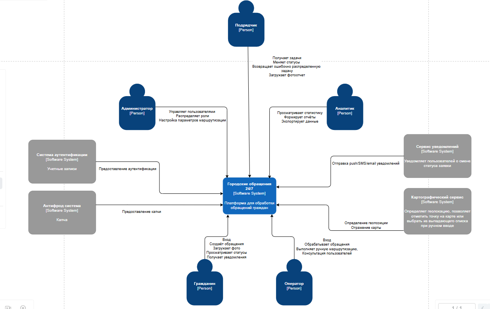
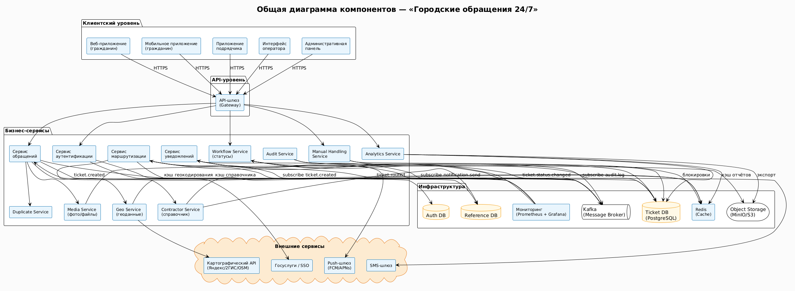
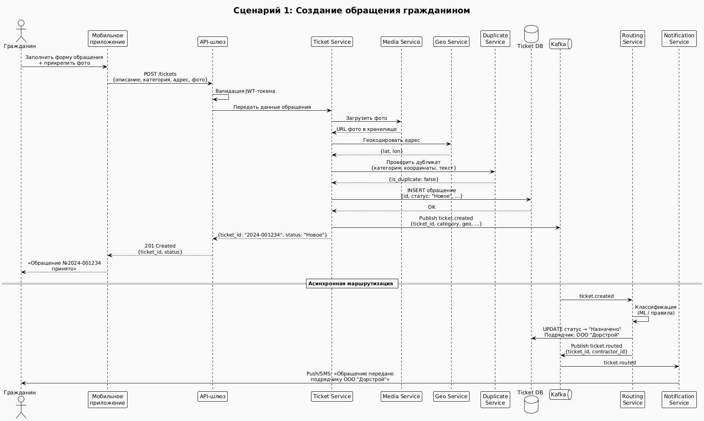
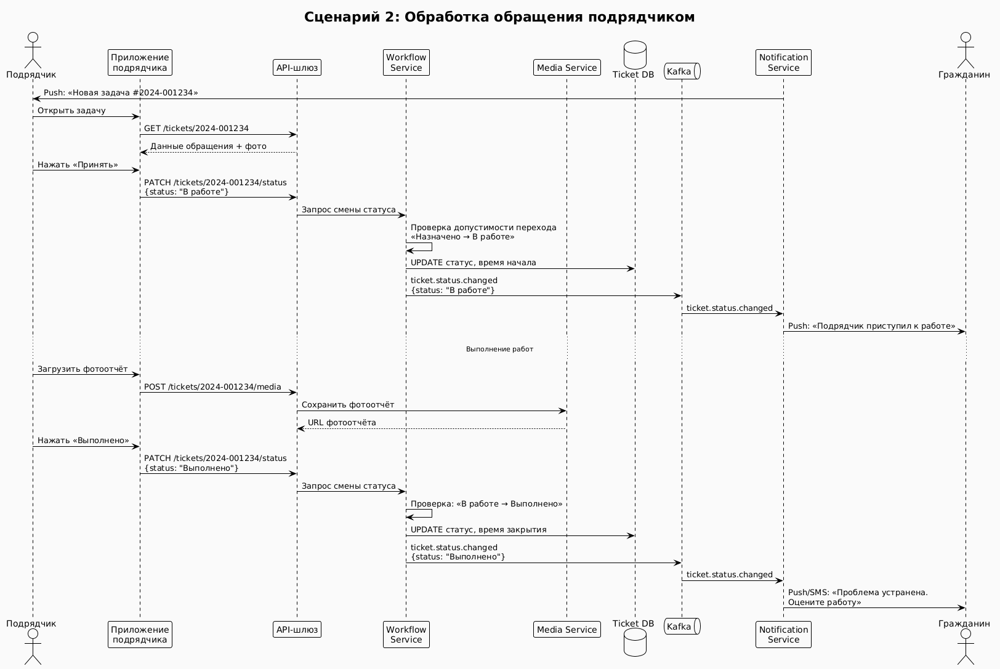
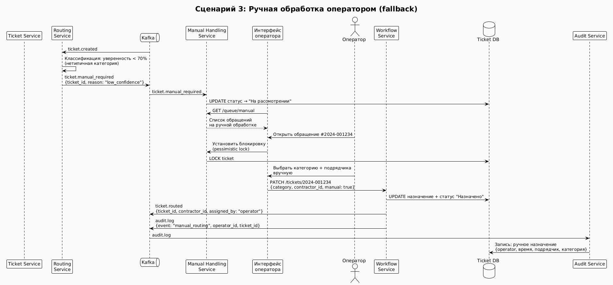
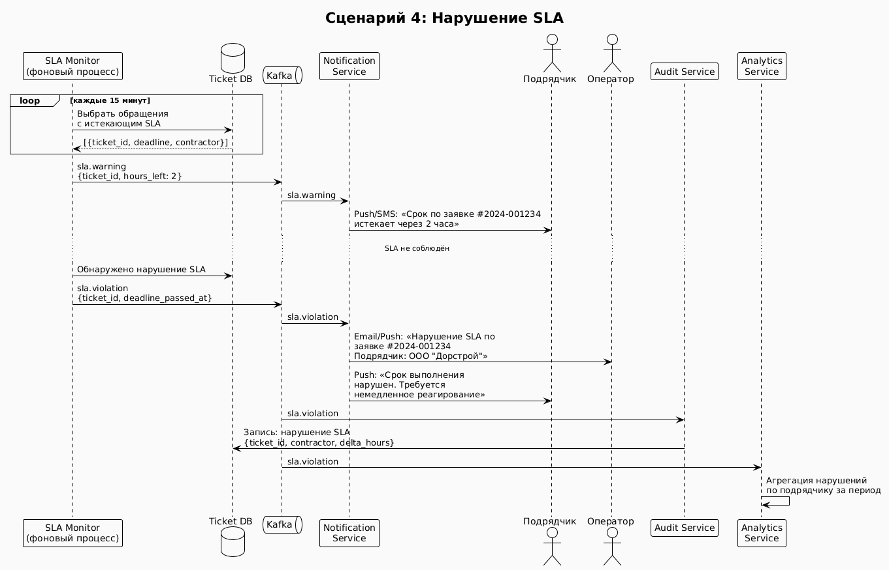

Контекст и границы SoI системы «Городские обращения 24/7»
Содержание
1. Тема
Система обработки обращений граждан «Городские обращения 24/7»
2. Цель системы
Цель Системы — обеспечить прозрачный, быстрый и контролируемый процесс приёма, маршрутизации и исполнения обращений граждан по проблемам городской инфраструктуры:
- предоставить гражданам удобный инструмент подачи обращений с фото и геолокацией, отслеживания статуса и получения уведомлений;
- автоматизировать классификацию проблем и назначение ответственных подрядчиков для сокращения времени реакции;
- обеспечить операторов и администраторов средствами ручной обработки, контроля качества и аудита;
- дать аналитикам возможность оценивать эффективность подрядчиков, выявлять проблемные зоны и готовить отчёты для управленческих решений;
- гарантировать сохранность данных и устойчивость сервиса даже при отказах внешних зависимостей.
3. Внешние сущности
Для демонстрации потоков взаимодействия между проектируемой системой и внешними сущностями используется контекстный уровень диаграммы C4.

3.1 Пользователи и их взаимодействие с системой
| Пользователь | Основные действия |
|---|---|
| Гражданин | Регистрация / авторизация (через Госуслуги или по телефону); создание обращения с фото, описанием и геолокацией; просмотр статуса и истории обращений; получение уведомлений о смене статуса; связь с оператором (комментарии). |
| Оператор | Просмотр очереди обращений, фильтрация, поиск; ручная классификация и корректировка категории; переназначение подрядчика; отклонение ошибочных / спам-обращений с указанием причины; консультирование граждан по обращениям. |
| Подрядчик | Просмотр назначенных задач (только своих); изменение статуса: «Принято» → «В работе» → «Выполнено»; загрузка фотоотчётов и комментариев; возврат обращения оператору с указанием причины. |
| Аналитик | Доступ к историческим данным и статистике; построение отчётов с фильтрацией по району, категории, подрядчику, статусу; визуализация проблем на карте; оценка эффективности подрядчиков; экспорт данных. |
| Администратор | Управление пользователями и ролями (RBAC); настройка правил маршрутизации, категорий обращений, зон ответственности подрядчиков; конфигурация уведомлений; просмотр аудит-логов; мониторинг и восстановление после сбоев. |
3.2 Внешние интеграции и их обоснование
| Интеграция | Назначение и обоснование |
|---|---|
| Картографический сервис (Яндекс.Карты / 2ГИС) | Автоматическое определение геолокации пользователя и обратное геокодирование адреса. Отображение проблемных зон на карте для аналитиков. Использование готового картографического API позволяет не разрабатывать собственную систему координат и карт, сокращая затраты. Падение сервиса не приводит к остановке приёма обращений — предусмотрен fallback с ручным выбором точки. |
| Шлюзы уведомлений (Push — через Firebase / APNS, SMS — через агрегатора, Email — через SMTP) | Своевременное информирование граждан о смене статуса и подрядчиков о новых задачах. Использование внешних шлюзов избавляет от необходимости строить собственную инфраструктуру доставки сообщений (дорого и сложно). Асинхронная очередь и повторные попытки компенсируют временную недоступность шлюзов. |
| Система аутентификации (Госуслуги / mail/телефон) | Граждане могут авторизоваться через подтверждённую учётную запись Госуслуг — это повышает доверие и снижает число анонимных спам-обращений. Для операторов и подрядчиков возможна интеграция с корпоративным Active Directory. Система не хранит пароли, получая только подтверждённые атрибуты (ФИО, email, телефон). |
4. Границы системы
4.1 В зоне ответственности системы (внутри границ)
| Компонент / контейнер | Что обеспечивает |
|---|---|
| Веб-приложение (гражданин) | Форма создания обращений, просмотр статуса и истории, загрузка фото, отображение карты (через интеграцию). |
| Мобильное приложение (гражданин) | Аналогичные функции + офлайн-сохранение черновиков, GPS-координаты, push-уведомления. |
| Приложение подрядчика | Список задач, изменение статусов, загрузка фотоотчётов, локальное кэширование, офлайн-режим с очередью синхронизации. |
| Интерфейс оператора | Таблица обращений с фильтрацией и поиском, карточка для редактирования, ручная маршрутизация, объединение дубликатов, история изменений. |
| Административная панель + Аналитический модуль | Управление пользователями и ролями, настройка правил маршрутизации, категорий и подрядчиков; дашборды, отчёты, экспорт. |
| API-шлюз (Gateway) | Единая точка входа, аутентификация (через JWT), rate limiting, маршрутизация запросов к микросервисам. |
| Сервис обращений | Приём, валидация, сохранение в БД, присвоение ID и начального статуса, генерация событий. |
| Сервис маршрутизации | Автоматическая классификация (ML / правила), выбор подрядчика по зоне ответственности, fallback-очередь оператора. |
| Сервис статусов (Workflow) | Конечный автомат переходов, контроль допустимых изменений ролями, фиксация времени. |
| Сервис уведомлений | Формирование и отправка уведомлений через внешние шлюзы, очередь, повторные попытки. |
| Сервис фото и файлов | Загрузка, проверка размера и формата, вычисление контрольных сумм, интеграция с S3. |
| Сервис геоданных | Абстракция над картографическим API, кэширование, fallback на ручной ввод. |
| Сервис дубликатов | Проверка похожих обращений (по гео, категории, тексту), предупреждение пользователя. |
| Сервис аудита и логирования | Неизменяемый аудит всех действий (кто, что, когда, IP, ID обращения). |
| Сервис аналитики и отчётов | Агрегация данных, формирование витрин, онлайн- и асинхронные отчёты, кэширование. |
| Брокер сообщений | Асинхронный обмен событиями между сервисами (Kafka / RabbitMQ). |
| База данных (Ticket DB) | Реляционное хранение обращений, статусов, назначений, истории. |
| Кэш (Redis) | Кэширование справочников, сессий, результатов геокодирования, очередей фоновых задач. |
4.2 Вне зоны ответственности системы (вне границ)
| Сущность | Почему вне границ |
|---|---|
| Картографический API | Готовый внешний сервис. Система только адаптируется к нему через сервис геоданных. Разработка собственных карт экономически нецелесообразна. |
| Шлюзы уведомлений (Push, SMS, Email) | Сторонние агрегаторы. Система формирует запросы, но не реализует физическую доставку сообщений. |
| Система аутентификации (Госуслуги, SSO, AD) | Система не хранит пароли и не проводит первичную аутентификацию — только проверяет токены и получает атрибуты. |
| Резервное копирование на уровне физических носителей | Система может инициировать резервное копирование БД, но не отвечает за ленточные библиотеки или облачные бэкапы (это задача DevOps / инфраструктуры). |
| Антифрод-система (CAPTCHA) | При необходимости используется внешний сервис (например, reCAPTCHA). Система только интегрирует его вызов. |
CONOPS / OPSCON
Содержание
1. Назначение системы
2. Границы системы и внешняя среда
3. Операционные роли
4. Операционные сценарии
- Сценарий 1. Подача обращения гражданином
- Сценарий 2. Автоматическая маршрутизация обращения
- Сценарий 3. Выполнение работ подрядчиком
- Сценарий 4. Ручная обработка оператором
- Сценарий 5. Анализ обращений и формирование отчетности
5. Общие исключения
6. Общие режимы деградации
1. Назначение системы
Система «Городские обращения 24/7» предназначена для круглосуточного приема, обработки, маршрутизации и контроля исполнения обращений граждан по вопросам городской инфраструктуры, ЖКХ, благоустройства и иных инцидентов городской среды.
Система должна обеспечивать:
- быстрый приём обращения от гражданина;
- автоматическое определение типа проблемы и маршрутизацию подрядчику;
- контроль сроков выполнения работ по SLA;
- информирование заявителя о ходе выполнения;
- поддержку ручной обработки оператором;
- накопление данных для аналитики и управления городским хозяйством.
Система рассматривается как операционный инструмент, который связывает граждан, операторов, подрядчиков и администрацию в едином процессе обработки инцидентов. Она не заменяет подрядные организации, а координирует их работу и фиксирует исполнение.
2. Границы системы и внешняя среда
Входит в систему
- веб- и мобильное приложение для граждан;
- операторский интерфейс;
- интерфейс подрядчиков;
- административная панель;
- аналитический модуль;
- backend, база данных, логирование, аудит, механизмы маршрутизации, SLA-контроль и уведомления.
Внешние зависимости
- сервисы авторизации;
- картографические сервисы и геокодирование;
- push/SMS/email-шлюзы;
- файловое хранилище для фото и отчётов;
- внешние подрядные системы;
- интернет-соединение пользователя и серверная инфраструктура.
Что не входит в систему
- физическое выполнение ремонта;
- юридическое рассмотрение жалоб;
- принятие управленческих решений вместо администрации;
- обеспечение работы внешних сервисов, от которых система зависит.
3. Операционные роли
1) Гражданин
Создает обращения, прикладывает фото, отслеживает статус и получает уведомления.
Ожидания роли:
- подать обращение быстро и без сложных действий;
- видеть, что обращение принято;
- понимать текущий статус;
- получать уведомления о смене статуса и завершении работ.
2) Оператор
Проверяет обращения, редактирует их, устраняет дубли и перенаправляет подрядчикам.
Ожидания роли:
- видеть полную картину обращений;
- иметь инструменты фильтрации и поиска;
- быстро исправлять ошибочные данные;
- контролировать сроки исполнения.
3) Подрядчик
Получает задачи, обновляет статусы, загружает фотоотчёты.
Ожидания роли:
- получать только свои заявки;
- видеть приоритет и срок;
- быстро менять статус;
- иметь возможность приложить подтверждение выполнения.
4) Администратор
Управляет пользователями, ролями, настройками и доступом.
Ожидания роли:
- контролировать права доступа;
- настраивать системные правила;
- отслеживать корректность работы модулей;
- обеспечивать непрерывность сервиса.
5) Аналитик
Формирует отчеты и анализирует статистику.
Ожидания роли:
- получать достоверные исторические данные;
- строить отчеты;
- выявлять системные проблемы;
- сравнивать районы, периоды и подрядчиков.
6) Служба поддержки
Контролирует доступность системы, восстановление и деградации.
Ожидания роли:
- быстро видеть сбои;
- понимать причину отказа;
- восстанавливать сервис без потери данных;
- контролировать деградацию и возврат к нормальному режиму.
4. Операционные сценарии
Сценарий 1. Подача обращения гражданином
Цель
Гражданин должен быстро зарегистрировать обращение с описанием проблемы, геолокацией и фотографией.
Условия начала
- пользователь авторизован;
- у пользователя есть доступ к интернету;
- доступно мобильное или веб-приложение;
- backend системы доступен;
- сервис геолокации либо доступен, либо предусмотрен ручной ввод места.
Основной поток (Happy path)
- Гражданин открывает приложение.
- Выбирает создание нового обращения.
- Указывает тип проблемы или кратко описывает её.
- Прикрепляет фотографию при необходимости.
- Система автоматически определяет геолокацию или предлагает поставить точку на карте вручную.
- Пользователь подтверждает отправку.
- Система проверяет обязательные поля, валидирует данные, выполняет антиспам-проверку.
- Система сохраняет обращение в базе данных.
- Система присваивает обращению уникальный номер и статус «Новый».
- Пользователь видит подтверждение приема обращения.
- При необходимости отправляется push/SMS/email-уведомление о регистрации обращения.
Результат
Обращение успешно зарегистрировано, сохранено, доступно для дальнейшей маршрутизации и отображается в личном кабинете гражданина.
Исключения и нештатные ситуации
- Пользователь не авторизован — система не принимает обращение и предлагает войти в аккаунт.
- Не заполнено описание или не выбрано место — система не дает отправить форму и подсвечивает обязательные поля.
- Фото превышает допустимый размер — система отклоняет файл и сообщает о лимите.
- Обнаружено дублирующее обращение — система предупреждает о возможном дубле и предлагает не создавать повторную заявку.
- Геолокация неточна или запрещена — пользователь вручную указывает место на карте.
- Антифрод сработал на подозрительную активность — обращение помещается в проверку или отклоняется по политике системы.
Режимы деградации
- При недоступности автоматической геолокации система должна позволять ручной выбор точки на карте.
- При временной недоступности загрузки фото система должна сохранять текст обращения и сообщать пользователю, что изображение можно добавить позже.
- При замедлении backend система должна показать пользователю статус обработки и не допускать повторной отправки одной и той же формы.
- При недоступности уведомлений система должна сохранить обращение и отобразить статус в личном кабинете без мгновенного push.
Сценарий 2. Автоматическая маршрутизация обращения
Цель
Система должна определить тип проблемы и назначить ответственного подрядчика по району и категории.
Условия начала
- обращение уже зарегистрировано;
- доступны справочники категорий, подрядчиков и зон ответственности;
- сервис маршрутизации и правила назначения работают;
- у обращения достаточно данных для классификации.
Основной поток (Happy path)
- Система получает новое обращение.
- Система анализирует текст, категорию, фото и геолокацию.
- Выполняется автоматическая классификация проблемы.
- Система выбирает подходящего подрядчика по типу проблемы, району и текущей загрузке.
- Обращение переводится в статус «Назначено подрядчику».
- Подрядчик получает уведомление о новой задаче.
Результат
Обращение назначено подрядчику.
Исключения и нештатные ситуации
- Категория обращения не определена — система отправляет обращение в очередь оператора на ручную классификацию.
- Несколько подрядчиков подходят одновременно — система выбирает по приоритету, загрузке или правилам распределения.
Режимы деградации
- При сбое модуля автоматической маршрутизации система переводит обращения в очередь ручной обработки оператором.
- При недоступности сервисов карт система использует адрес, введенный пользователем.
- При недоступности сети, обращение сохраняется в очереди и позже отправляется системе.
Сценарий 3. Выполнение работ подрядчиком
Цель
Подрядчик должен выполнить задачу и закрыть обращение.
Условия начала
- обращение назначено подрядчику;
- подрядчик авторизован;
- задача отображается в его списке;
Основной поток (Happy path)
- Подрядчик открывает список задач.
- Выбирает назначенное обращение.
- Просматривает адрес, описание и дополнительные данные.
- Подтверждает принятие задачи.
- Меняет статус обращения на «В работе».
- Выполняет работы на месте.
- После завершения загружает фотоотчёт и комментарий.
- Переводит обращение в статус «Выполнено».
- Система сохраняет отчёт.
- Гражданин получает уведомление о смене статуса.
Результат
Работа выполнена и подтверждена, гражданин уведомлен.
Исключения и нештатные ситуации
- Подрядчик не может выполнить работу — он возвращает задачу оператору с комментариями.
- Конфликт статусов — система запрещает откат статусов.
- Фотоотчёт не загружается — статус может быть сохранен, но система отмечает отсутствие подтверждающего материала.
- Подрядчик ошибочно закрыл не ту заявку — действие попадает в аудит и может быть откатено администратором или оператором по регламенту.
Режимы деградации
- При недоступности хранилища фото система должна позволять завершить работу с пометкой о необходимости последующей загрузки отчета.
- При временной недоступности сети у подрядчика изменения могут сохраняться в локальной очереди и отправляться после восстановления связи.
- При ограниченной доступности системы подрядчик должен сохранять возможность чтения задач.
- При получении неправильно распределённого обращения, подрядчик может отправить его обратно оператору с комментариями.
Сценарий 4. Ручная обработка оператором
Цель
Оператор должен обрабатывать некорректные, спорные, дублирующие или требующие вмешательства обращения.
Условия начала
- оператор авторизован;
- у оператора есть права на просмотр и редактирование;
- обращение находится в очереди оператора или требует ручной проверки;
- интерфейс поиска и фильтров доступен.
Основной поток (Happy path)
- Оператор открывает список новых и проблемных обращений.
- Использует фильтры по району, типу проблемы и статусу.
- Открывает карточку обращения.
- Проверяет описание, фото, адрес и историю действий.
- При необходимости редактирует обращение.
- Может отклонить некорректную заявку с указанием причины.
- Может объединить дубликаты или переназначить обращение подрядчику вручную.
- Обращение получает обновленный статус и продолжает жизненный цикл.
Результат
Обращение скорректировано, назначено корректному исполнителю или отклонено по правилам.
Исключения и нештатные ситуации
- У оператора нет прав на редактирование — система запрещает действие.
- Карточка обращения уже изменена другим пользователем — система сообщает о конфликте версий.
- Оператор пытается отклонить заявку без причины — система требует обязательное заполнение основания.
- Обращение уже выполнено — редактирование существенных полей блокируется или требует особого режима.
- Данные по обращению неполные — оператор может отправить заявку на доработку гражданину или перевести ее в ручную проверку.
Режимы деградации
- При отказе автоматической классификации система должна сохранять возможность полностью ручной обработки.
- При сбое уведомлений решение оператора сохраняется, а сообщение гражданину отправляется позже.
Сценарий 5. Анализ обращений и формирование отчетности
Цель
Аналитик должен иметь возможность получать актуальные данные по обращениям, анализировать статистику и формировать отчеты для оценки состояния городской инфраструктуры и эффективности работы подрядчиков
Условия начала
- аналитик авторизован в системе;
- в системе накоплены данные по обращениям;
- аналитический модуль доступен;
- данные из основных модулей синхронизированы.
Основной поток (Happy path)
- Аналитик открывает аналитический модуль системы.
- Выбирает временной период, район, категорию проблемы или подрядчика.
- Система загружает агрегированные данные по обращениям.
- Аналитик просматривает: 4.1. количество обращений; 4.2. распределение по категориям; 4.3. динамику обращений; 4.4. карту проблемных зон; 4.5. статистику по подрядчикам; 4.6. количество выполненных и отклонённых заявок.
- Система визуализирует данные в виде таблиц, графиков и карт.
- Система визуализирует данные в виде таблиц, графиков и карт.
- Аналитик формирует отчет по выбранным параметрам.
- Система сохраняет или экспортирует отчет.
- Полученные данные используются для контроля качества работы и подготовки управленческих решений.
Результат
Аналитик получает актуальную статистику и отчеты, позволяющие выявлять проблемные зоны, оценивать эффективность обработки обращений и формировать рекомендации для администрации города.
Исключения и нештатные ситуации
- Недостаточно данных для формирования отчета — система уведомляет аналитика о неполноте информации.
- Аналитический запрос слишком большой — система ограничивает объем данных или предлагает сформировать отчет асинхронно.
- Часть данных временно недоступна — система отображает предупреждение о неполной аналитике.
- Ошибка при экспорте отчета — система сохраняет запрос и предлагает повторить операцию позже.
Режимы деградации
- При высокой нагрузке аналитические данные могут обновляться с задержкой.
- При недоступности аналитического модуля обработка обращений продолжает работать.
- При временной недоступности картографического сервиса система отображает аналитические данные без карты.
- При недоступности сервиса экспорта аналитик может продолжать просмотр отчетов внутри системы без выгрузки файлов.
5. Общие исключения
- ошибка ввода пользователя;
- дублирование обращения;
- отказ внешнего сервиса;
- ошибки бизнес-правил;
- конфликт изменений;
- подозрительная активность и спам.
6. Общие режимы деградации
- работа без картографического сервиса;
- отложенные уведомления;
- ручная маршрутизация вместо автоматической;
- режим ограниченной функциональности при высокой нагрузке;
- сохранение критичных операций при частичной недоступности базы данных.
Требования
Требования к системе с т.з. стейкхолдеров (SR-SH)
Гражданин
-
SR-SH-1 (Гражданин — быстрое создание обращения)
Система должна предоставлять гражданину возможность быстро и удобно создавать обращение с описанием проблемы, фотографиями и геолокацией, чтобы минимизировать время подачи заявки и упростить взаимодействие с городскими службами.
-
SR-SH-2 (Гражданин — прозрачность обработки обращения)
Система должна обеспечивать гражданину возможность отслеживать текущее состояние обращения и историю изменения его статусов, чтобы пользователь понимал, что его проблема находится в обработке.
-
SR-SH-3 (Гражданин — информирование о ходе работ)
Система должна своевременно уведомлять гражданина о регистрации обращения, изменении статусов и завершении работ, чтобы пользователь не был вынужден самостоятельно уточнять состояние заявки.
-
SR-SH-4 (Гражданин — сохранность обращения)
Система должна гарантировать гражданину сохранение обращения и связанных материалов даже при временных технических сбоях, чтобы пользователь не терял введённые данные и результаты отправки.
-
SR-SH-5 (Гражданин — удобство и доступность)
Система должна обеспечивать интуитивно понятный интерфейс и поддержку мобильных устройств, чтобы обращения могли подаваться пользователями без специальной подготовки.
-
SR-SH-6 (Гражданин — просмотр истории обращений)
Система должна предоставлять гражданину доступ к истории ранее созданных обращений с возможностью поиска и фильтрации по статусу, дате и типу проблемы, чтобы пользователь мог отслеживать свои обращения и повторно обращаться к ним при необходимости.
-
SR-SH-7 (Гражданин — уведомление о возможном дубликате)
Система должна уведомлять гражданина о том, что аналогичное обращение уже было зарегистрировано ранее, чтобы уменьшать количество дублирующих заявок и информировать пользователя о существующей обработке проблемы.
-
SR-SH-8 (Гражданин — связь с оператором)
Система должна предоставлять гражданину возможность связаться с оператором по обращению для уточнения информации, предоставления дополнительных данных или получения консультации по статусу заявки. Оператор.
Оператор
-
SR-SH-9 (Оператор — централизованное управление обращениями)
Система должна предоставлять оператору единый интерфейс для просмотра, поиска, фильтрации и обработки обращений, чтобы обеспечивать эффективную диспетчеризацию инцидентов.
-
SR-SH-10 (Оператор — ручная корректировка обработки)
Система должна позволять оператору изменять категорию обращения, корректировать данные и переназначать подрядчиков, чтобы компенсировать ошибки автоматической маршрутизации.
-
SR-SH-11 (Оператор — поддержка пользователей)
Система должна предоставлять оператору возможность консультировать граждан по вопросам обращений, уточнять информацию по заявкам и помогать пользователям при возникновении проблем с использованием системы.
-
SR-SH-12 (Оператор — работа с проблемными обращениями)
Система должна предоставлять оператору механизмы обработки дубликатов, ошибочных и подозрительных заявок, чтобы поддерживать качество данных и снижать нагрузку на подрядчиков.
-
SR-SH-13 (Оператор — непрерывность обработки)
Система должна обеспечивать оператору возможность продолжения обработки обращений даже при частичной деградации внешних сервисов, чтобы критические процессы не останавливались. Подрядчик
Подрядчик
-
SR-SH-14 (Подрядчик — получение актуальных задач)
Система должна предоставлять подрядчику доступ только к назначенным ему обращениям с полной информацией о проблеме, чтобы обеспечивать своевременное выполнение работ.
-
SR-SH-15 (Подрядчик — управление выполнением работ)
Система должна позволять подрядчику изменять статусы обращений, подтверждать начало работ и фиксировать завершение задач, чтобы отражать фактический ход исполнения.
-
SR-SH-16 (Подрядчик — подтверждение выполнения)
Система должна обеспечивать подрядчику возможность загружать фотоотчёты и комментарии по выполненным работам, чтобы подтверждать факт устранения проблемы.
-
SR-SH-17 (Подрядчик — возврат ошибочно назначенной заявки)
Система должна предоставлять подрядчику возможность вернуть обращение оператору с указанием причины в случае ошибочного или некорректного назначения задачи.
Администратор
-
SR-SH-18 (Администратор — управление пользователями и ролями)
Система должна позволять администратору управлять учётными записями пользователей, ролями и правами доступа, чтобы обеспечивать безопасную эксплуатацию платформы.
-
SR-SH-19 (Администратор — настройка системных правил)
Система должна предоставлять администратору возможность конфигурировать правила маршрутизации, категории обращений и параметры уведомлений.
-
SR-SH-20 (Администратор — аудит и контроль действий)
Система должна фиксировать действия пользователей и изменения обращений, чтобы обеспечивать возможность аудита, расследования инцидентов и восстановления истории операций.
-
SR-SH-21 (Администратор — устойчивость и восстановление)
Система должна предоставлять механизмы резервного копирования, мониторинга и восстановления после сбоев, чтобы обеспечивать непрерывность работы сервиса.
-
SR-SH-22 (Администратор — управление обращениями)
Система должна предоставлять администратору возможность просматривать и управлять обращениями в исключительных и административных ситуациях, чтобы обеспечивать восстановление процессов и контроль корректности работы системы.
Аналитик
-
SR-SH-23 (Аналитик — доступ к историческим данным)
Система должна предоставлять аналитику доступ к историческим данным обращений, статусам, действиям пользователей и результатам выполнения работ для проведения долгосрочного анализа.
-
SR-SH-24 (Аналитик — формирование отчетности)
Система должна обеспечивать аналитику возможность формировать отчёты по обращениям, подрядчикам, районам, категориям проблем и статусам обработки.
-
SR-SH-25 (Аналитик — визуализация проблемных зон)
Система должна предоставлять аналитику инструменты отображения обращений на карте и визуализации концентрации проблем по районам и категориям.
-
SR-SH-26 (Аналитик — анализ динамики обращений)
Система должна предоставлять аналитику возможность анализировать изменение количества и типов обращений за различные периоды времени для выявления тенденций и проблемных направлений.
-
SR-SH-27 (Аналитик — оценка эффективности подрядчиков)
Система должна предоставлять аналитику данные для сравнения подрядчиков по количеству обработанных обращений, статусам выполнения и числу возвратов заявок.
-
SR-SH-28 (Аналитик — фильтрация и сегментация данных)
Система должна предоставлять аналитику возможность фильтрации и сегментации данных по районам, временным периодам, категориям проблем, подрядчикам и статусам обращений.
-
SR-SH-29 (Аналитик — экспорт аналитических данных)
Система должна предоставлять аналитику возможность выгрузки отчетов и агрегированных данных для дальнейшей обработки и подготовки внешней отчетности.
Системные требования (SR-SYS)
Сценарий 1 — Подача обращения гражданином
SR-SYS-1 (Сценарий 1 — Доступ к созданию обращения)
Система должна разрешать создание обращения только авторизованному пользователю.
Верификация: функциональный тест (неавторизованный пользователь пытается создать обращение => система требует авторизацию).
SR-SYS-2 (Сценарий 1 — Создание обращения)
Система должна предоставлять пользователю форму создания обращения с возможностью указания описания проблемы, категории, геолокации и прикрепления фотографий.
Верификация: функциональный тест (пользователь открывает форму => доступны поля описания, категории, карты и загрузки фото).
SR-SYS-3 (Сценарий 1 — Автоматическое определение геолокации)
При создании обращения система должна запрашивать доступ к геолокации пользователя и автоматически определять координаты при наличии разрешения.
Верификация: функциональный тест (разрешён доступ к геолокации => координаты автоматически отображаются в форме обращения).
SR-SYS-4 (Сценарий 1 — Ручной выбор местоположения)
При отсутствии доступа к геолокации или отказе пользователя система должна предоставлять возможность ручного выбора точки на карте.
Верификация: функциональный тест (геолокация отключена => пользователь может вручную выбрать точку на карте).
SR-SYS-5 (Сценарий 1 — Проверка обязательных полей)
Перед отправкой обращения система должна проверять заполнение обязательных полей и запрещать отправку обращения при отсутствии обязательных данных.
Верификация: функциональный тест (не заполнено описание или местоположение => отправка обращения заблокирована).
SR-SYS-6 (Сценарий 1 — Проверка размера файлов)
При загрузке фотографий система должна проверять размер и формат файлов и отклонять файлы, превышающие допустимые ограничения.
Верификация: функциональный тест (загружается файл больше лимита => система отклоняет загрузку и отображает сообщение об ошибке).
SR-SYS-7 (Сценарий 1 — Антиспам и проверка дубликатов)
Перед регистрацией обращения система должна выполнять проверку на дублирующие обращения и подозрительную активность.
Верификация: функциональный тест (создаётся идентичное обращение => система предупреждает пользователя о возможном дубле).
SR-SYS-8 (Сценарий 1 — Регистрация обращения)
После успешной проверки обращения система должна сохранять обращение в базе данных, присваивать уникальный идентификатор и устанавливать начальный статус «Новое».
Верификация: функциональный тест (валидное обращение отправлено => обращение сохранено с уникальным ID и статусом «Новое»).
SR-SYS-9 (Сценарий 1 — Уведомление о регистрации обращения)
После успешной регистрации обращения система должна отправлять пользователю уведомление о принятии обращения.
Верификация: функциональный тест (обращение успешно зарегистрировано => пользователь получает уведомление).
SR-SYS-10 (Сценарий 1 — Работа при недоступности сервиса загрузки фото)
При недоступности сервиса хранения изображений система должна сохранять текст обращения и позволять пользователю загрузить фотографии позднее.
Верификация: интеграционный тест (сервис хранения фото недоступен => текст обращения сохраняется, отображается уведомление о возможности поздней загрузки фото).
SR-SYS-11 (Сценарий 1 — Предотвращение повторной отправки)
При задержке обработки обращения система должна блокировать повторную отправку одной и той же формы до завершения обработки предыдущего запроса.
Верификация: функциональный тест (пользователь многократно нажимает кнопку отправки => создаётся только одно обращение).
Сценарий 2 — Автоматическая маршрутизация обращения
SR-SYS-12 (Сценарий 2 — Автоматическая классификация обращения)
После регистрации обращения система должна выполнять автоматическую классификацию проблемы на основе текста, категории, геолокации и дополнительных данных обращения.
Верификация: функциональный тест (создано обращение => системе назначается категория проблемы).
SR-SYS-13 (Сценарий 2 — Выбор подрядчика)
Система должна определять подрядчика на основании категории обращения, географической зоны ответственности и правил распределения.
Верификация: функциональный тест (обращение зарегистрировано => выбран подрядчик, соответствующий категории и району).
SR-SYS-14 (Сценарий 2 — Назначение обращения подрядчику)
После выбора подрядчика система должна переводить обращение в статус «Назначено подрядчику».
Верификация: функциональный тест (подрядчик определён => статус обращения изменён).
SR-SYS-15 (Сценарий 2 — Уведомление подрядчика)
После назначения обращения система должна отправлять подрядчику уведомление о новой задаче.
Верификация: функциональный тест (обращение назначено => подрядчик получает уведомление).
SR-SYS-16 (Сценарий 2 — Ручная обработка при ошибке классификации)
Если система не может определить категорию обращения, обращение должно быть автоматически направлено оператору на ручную обработку.
Верификация: функциональный тест (категория не определена => обращение попадает в очередь оператора).
SR-SYS-17 (Сценарий 2 — Работа при недоступности маршрутизации)
При недоступности сервиса автоматической маршрутизации система должна переводить обращения в очередь ручной обработки оператором.
Верификация: интеграционный тест (сервис маршрутизации недоступен => обращения становятся доступны оператору).
Сценарий 3 — Выполнение работ подрядчиком
SR-SYS-18 (Сценарий 3 — Доступ подрядчика к задачам)
Система должна предоставлять подрядчику доступ только к обращениям, назначенным его организации.
Верификация: функциональный тест (подрядчик авторизован => отображаются только его обращения).
SR-SYS-19 (Сценарий 3 — Изменение статуса обращения)
Система должна позволять подрядчику изменять статус обращения в рамках допустимого жизненного цикла обращения.
Верификация: функциональный тест (подрядчик меняет статус => система сохраняет изменение).
SR-SYS-20 (Сценарий 3 — Загрузка фотоотчета)
Система должна позволять подрядчику прикреплять фотографии и комментарии к выполненному обращению.
Верификация: функциональный тест (подрядчик загружает фотоотчёт => данные сохраняются в системе).
SR-SYS-21 (Сценарий 3 — Возврат обращения оператору)
Система должна позволять подрядчику возвращать обращение оператору с обязательным указанием причины возврата.
Верификация: функциональный тест (подрядчик инициирует возврат без причины => операция отклоняется).
SR-SYS-22 (Сценарий 3 — Запрет недопустимого отката статусов)
Система должна запрещать изменение статуса обращения на предыдущий этап жизненного цикла без специальных прав.
Верификация: функциональный тест (подрядчик пытается откатить статус => операция отклоняется).
SR-SYS-23 (Сценарий 3 — Работа при отсутствии соединения)
При временной потере сетевого соединения система должна обеспечивать локальное сохранение изменений подрядчика с последующей синхронизацией после восстановления соединения.
Верификация: функциональный тест (соединение потеряно => изменения сохраняются локально и синхронизируются после восстановления сети).
Сценарий 4 — Ручная обработка оператором
SR-SYS-24 (Сценарий 4 — Просмотр обращений оператором)
Система должна предоставлять оператору интерфейс просмотра всех обращений с поддержкой поиска и фильтрации.
Верификация: функциональный тест (оператор открывает список обращений => доступны фильтры и поиск).
SR-SYS-25 (Сценарий 4 — Редактирование обращения)
Система должна позволять оператору редактировать данные обращения до момента его завершения.
Верификация: функциональный тест (оператор изменяет данные обращения => изменения сохраняются).
SR-SYS-26 (Сценарий 4 — Отклонение обращения)
Система должна позволять оператору отклонять обращение только с обязательным указанием причины отклонения.
Верификация: функциональный тест (отклонение без причины => операция запрещена).
SR-SYS-27 (Сценарий 4 — Автоматическое обнаружение дубликатов)
При создании нового обращения система должна автоматически проверять наличие похожих обращений по геолокации, категории проблемы и времени создания, и при обнаружении возможного дубликата уведомлять пользователя до завершения отправки заявки.
Верификация: функциональный тест (пользователь отправляет обращение с совпадающими параметрами существующей заявки => система отображает предупреждение о возможном дубликате).
SR-SYS-28 (Сценарий 4 — Ручное переназначение подрядчика)
Система должна позволять оператору вручную изменять назначенного подрядчика обращения.
Верификация: функциональный тест (оператор меняет подрядчика => система сохраняет новое назначение).
SR-SYS-29 (Сценарий 4 — Исключение конфликтов обработки)
Система должна автоматически распределять обращения между операторами по принципу очереди. Обращение, взятое в обработку одним оператором, будет недоступно для редактирования и просмотра другому оператору.
Верификация: функциональный тест (оператор A открывает обращение в обработку => у оператора B данное обращение не отображается).
SR-SYS-30 (Сценарий 4 — Работа при недоступности уведомлений)
При недоступности сервиса уведомлений система должна сохранять изменения обращения и выполнять отложенную отправку уведомлений после восстановления сервиса.
Верификация: интеграционный тест (сервис уведомлений недоступен => изменения сохранены, уведомления отправлены позже).
Сценарий 5 — Анализ обращений и формирование отчетности
SR-SYS-31 (Сценарий 5 — Доступ к аналитическому модулю)
Система должна предоставлять доступ к аналитическому модулю только пользователям с ролью аналитика или администратора.
Верификация: функциональный тест (аналитик имеет доступ, обычный пользователь — нет).
SR-SYS-32 (Сценарий 5 — Фильтрация аналитических данных)
Система должна предоставлять возможность фильтрации аналитических данных по периоду, району, подрядчику, категории проблемы и статусу обращения.
Верификация: функциональный тест (аналитик применяет фильтр => отображаются соответствующие данные).
SR-SYS-33 (Сценарий 5 — Формирование агрегированной статистики)
Система должна формировать агрегированную статистику по обращениям, подрядчикам, категориям проблем и статусам обработки.
Верификация: функциональный тест (аналитик открывает отчет => отображается агрегированная статистика).
SR-SYS-34 (Сценарий 5 — Визуализация данных)
Система должна отображать аналитические данные в виде таблиц, графиков и карт.
Верификация: функциональный тест (аналитический модуль открыт => данные визуализированы).
SR-SYS-35 (Сценарий 5 — Экспорт отчетов)
Система должна обеспечивать экспорт сформированных отчетов во внешний файл.
Верификация: функциональный тест (аналитик выполняет экспорт => файл успешно сформирован).
SR-SYS-36 (Сценарий 5 — Работа при высокой нагрузке)
При высокой нагрузке система должна обеспечивать возможность асинхронного формирования аналитических отчетов.
Верификация: нагрузочный тест (создан тяжёлый аналитический запрос => отчёт формируется асинхронно).
SR-SYS-37 (Сценарий 5 — Работа при недоступности картографического сервиса)
При недоступности картографического сервиса система должна продолжать предоставлять аналитические данные без отображения карты.
Верификация: интеграционный тест (карты недоступны => аналитика доступна без картографического слоя).
NFR - Нефункциональные требования
Общая методика оценки качества
- Метрики производительности – p95 и p99 времени отклика ключевых операций (создание обращения, маршрутизация, поиск, формирование отчёта) при штатной нагрузке.
- Метрики доступности – SLA для критических пользовательских функций (подача обращения, просмотр статуса, изменение статуса подрядчиком). Под SLA понимается доля времени, в течение которого функция доступна пользователю в штатном или допустимом деградированном режиме.
- Метрики точности и надёжности – доля успешно классифицированных обращений, сохранность данных, целостность аудит-логов, доля потерянных уведомлений.
Примечание: Внешние системы (картографические сервисы, шлюзы уведомлений, файловое хранилище, сервисы авторизации) рассматриваются как внешние зависимости. Их отказ не считается нарушением SLA платформы, если система корректно переходит в предусмотренный режим деградации (ручной ввод геолокации, отложенная отправка уведомлений, локальное сохранение фото и т.д.).
NFR-1 (Производительность подачи обращения – сценарий 1)
Описание: От нажатия кнопки «Отправить обращение» до получения пользователем подтверждения с уникальным номером должно пройти не более 3 секунд в 95-м перцентиле (p95) при нагрузке до 100 одновременных созданий обращений в секунду и штатной работе зависимостей (хранилище фото, геокодер).
Включает: валидацию полей, антиспам-проверку, проверку дубликатов, сохранение в БД, присвоение ID и статуса «Новое». При недоступности файлового хранилища система должна сохранить обращение без фото не более чем за 2 секунды p95 (деградированный режим).
Верификация: Нагрузочное тестирование с профилем: 100 созданий/сек в течение 10 минут, не менее 60 000 обращений. Измеряется время от отправки формы до ответа сервера. Вычисляется p95 и p99. Доля ответов с кодом 5xx должна быть < 0,5%.
Дополнительно – fault-injection тест с отключением хранилища фото на 5 минут: p95 времени создания обращения без фото ≤ 2 с, ошибки сохранения отсутствуют.
NFR-2 (Доступность подачи и просмотра обращений)
Описание: Функции «Создать обращение» и «Просмотреть статус/историю обращений» должны быть доступны с коэффициентом доступности не ниже 99,7% в месяц, исключая плановые окна обслуживания (не более 4 часов в месяц).
При недоступности картографического сервиса система должна переходить в режим ручного ввода адреса/точки на статичной карте, и доступность функции создания обращения должна сохраняться ≥ 99,5% времени в рамках указанного выше SLA (деградация допустима).
При полной недоступности БД обращений (основной реплики) система должна переключиться на резервную реплику за время не более 60 секунд без потери принятых обращений (сохранение в очереди).
Верификация:
SLA-мониторинг health-check’ами (интервал 30 секунд) критических эндпоинтов в течение 30 дней.
Fault-injection: отключение картографического сервиса на 15 минут – проверка, что создание обращения доступно с ручным вводом гео в ≥ 99,5% попыток (измеряется по логам). Отключение основной БД – замер времени переключения на реплику (≤ 60 с) и проверка отсутствия потери данных (сравнение очереди и восстановленной БД).
NFR-3 (Производительность автоматической маршрутизации – сценарий 2)
Описание: Время от сохранения обращения (статус «Новое») до назначения подрядчика (статус «Назначено подрядчику») не должно превышать 2 секунд в 95-м перцентиле для обращений, классифицированных автоматически (без ручного вмешательства), при нагрузке до 200 новых обращений/мин.
Включает: анализ текста/категории/гео, выбор подрядчика по правилам, запись статуса, отправку уведомления подрядчику (уведомление может быть асинхронным, но факт назначения должен быть зафиксирован за 2 с).
При сбое модуля маршрутизации и переходе в ручную очередь оператора – обращение должно стать доступным оператору не позднее чем через 5 секунд после неудачной попытки автоматической маршрутизации.
Верификация: Нагрузочный тест: 200 обращений/мин в течение 15 минут. Анализ логов времени создания обращения и времени проставления статуса «Назначено подрядчику». Расчёт p95 и p99.
Fault-injection: отключение модуля маршрутизации на 10 минут – проверка, что каждое новое обращение попадает в очередь оператора с задержкой ≤ 5 с после первого отказа.
NFR-4 (Отклик интерфейсов оператора и подрядчика)
Описание: Загрузка списка обращений (оператор, подрядчик) с фильтрацией по статусу, району, дате должна выполняться не более 3 секунд в 95-м перцентиле при объёме БД до 500 000 обращений и типовой нагрузке до 50 RPS на этот эндпоинт.
Открытие карточки обращения (полные данные, фото, история) – не более 2 секунд p95. Поиск по тексту описания (полнотекстовый) – не более 4 секунд p95.
Верификация: Тестирование производительности с предварительным наполнением БД 500 000 обращений. Генерация нагрузки: 50 RPS на список, 30 RPS на карточку, 20 RPS на поиск в течение 10 минут. Измеряется время ответа API (без учёта рендеринга на клиенте, если клиент тяжёлый – допускается +1 с). Уровень ошибок < 0,5%.
NFR-5 (Сохранность обращений при сбоях)
Описание: При потере соединения с сервером во время отправки обращения данные (текст, выбранная геолокация, прикреплённые фото) должны сохраняться локально на устройстве пользователя не позднее чем через 1 секунду после ввода.
После восстановления соединения система должна предложить отправить сохранённое обращение или сделать это автоматически в фоне. Синхронизация должна завершиться не позднее 30 секунд после восстановления сети при объёме данных до 5 фото (каждое ≤ 2 МБ).
Доля потерянных обращений (пользователь создал, но из-за сбоя обращение не сохранилось ни локально, ни на сервере) – не более 0,2% от попыток отправки.
Верификация: Fault-injection тестирование - разрывы соединения длительностью 10, 30 и 60 секунд в момент отправки, не менее 50 повторений для каждого сценария. Проверяется локальное сохранение и последующая синхронизация (контрольная выгрузка). Допустимый уровень потерь – менее 0,2% по логам клиента и сервера.
NFR-6 (Целостность и надёжность фотографий и отчётов)
Описание: Каждое загруженное фото (гражданином или подрядчиком) должно сохраняться с вычислением контрольной суммы (MD5 или SHA-256). При скачивании фото системой (отображение в интерфейсе, выгрузка в отчёт) целостность должна проверяться. Уровень успешной проверки – ≥ 99,9%.
Подтверждённое обращение (статус «Выполнено») должно иметь полный набор фотоотчётов и комментариев не менее чем в 99,5% случаев (потери артефактов после фиксации статуса не более 0,5%).
Верификация: Тесты целостности - искусственное повреждение 100 файлов, проверка, что система детектирует ошибку и не показывает повреждённое фото (или показывает заглушку). Аудит 1000 завершённых обращений: проверка наличия всех заявленных файлов в хранилище, соотнесение с БД. Доля несоответствий ≤ 0,5%.
NFR-7 (Своевременность уведомлений)
Описание: Уведомления гражданину о смене статуса обращения (push, SMS, email) должны быть отправлены не позднее 10 секунд после изменения статуса в 95-м перцентиле при штатной работе шлюзов уведомлений.
При недоступности шлюза (например, push-сервис не отвечает) система должна повторить отправку не менее 3 раз с экспоненциальной задержкой (1, 5, 15 секунд). При неудаче – поместить уведомление в очередь повторной отправки и периодически ретраить в течение 1 часа. Потеря уведомлений (не доставлены ни после всех ретраев) – не более 0,5%.
Верификация: Нагрузочный тест - 500 изменений статуса за 5 минут, измерение времени до фиксации отправки в логах (факт вызова шлюза). Fault-injection: отключение push-шлюза на 3 минуты – проверка, что количество потерянных уведомлений (залогировано как неотправленное после всех попыток) ≤ 0,5% от общего числа.
NFR-8 (Доступность для подрядчика в полевых условиях)
Описание: Мобильное приложение подрядчика должно сохранять работоспособность при прерывистом соединении (например, подземный паркинг, удалённый район). Основные действия (просмотр назначенных задач, изменение статуса на «В работе», «Выполнено», загрузка фото) должны выполняться в офлайн-режиме с локальной очередью.
После восстановления соединения все изменения и фото должны синхронизироваться в течение 120 секунд для разрыва связи до 15 минут и объёма данных до 10 МБ. Доля конфликтов (когда подрядчик изменил статус офлайн, а оператор уже переназначил задачу) – не более 1% от числа офлайн-операций, и система должна явно информировать подрядчика о конфликте.
Верификация: Тесты с эмуляцией сетевых разрывов (30 с, 5 мин, 15 мин) на 20 различных устройствах. Проверка: синхронизация полная, время в пределах нормы. Fault-injection конфликтов: параллельно оператор меняет подрядчика, а подрядчик офлайн переводит в «Выполнено». Проверка, что система не теряет данные и выдаёт конфликт с предложением действий.
NFR-9 (Надёжность интеграции с картографическим сервисом)
Описание: При штатной работе запрос геокодирования (преобразование адреса → координаты) должен выполняться не более 1 секунды p95.
При недоступности картографического API система автоматически переключается на ручной ввод геопозиции (точка на упрощённой карте или выбор адреса из кэша). Время обнаружения недоступности – не более 5 секунд. Доля обращений, для которых геолокация не была определена из-за отказа внешнего сервиса и не была заполнена вручную, должна быть < 0,5% от общего числа (контроль через ручные проверки оператора).
Верификация: Интеграционный тест с отключением картографического API на 10 минут – проверка перехода на fallback-режим за ≤ 5 с, и что граждане могут вручную указать точку. Нагрузочный тест: 300 геокодирований/мин в течение 5 минут – замер p95 времени ответа (≤ 1 с).
NFR-10 (Аналитика: производительность и точность отчётов)
Описание: Формирование стандартного отчёта (по району, категории, подрядчику за месяц) с агрегацией по всем обращениям за период до 1 года должно занимать не более 5 секунд для онлайн-просмотра (p95) при объёме данных до 1 млн обращений.
Сложные отчёты с кросс-фильтрацией и выгрузкой больших объёмов (более 100 тыс. записей) должны формироваться асинхронно с уведомлением аналитика о готовности в течение 2 минут. Точность агрегированных данных: расхождение между сырыми данными и отчётом не должно превышать 0,01% (например, из-за пропуска обращений при агрегации). Дублирование записей в отчётах – 0%.
Верификация:
- Тест производительности: БД 1 млн обращений. 10 одновременных аналитиков генерируют типовые отчёты в течение 10 минут – замер p95 времени ответа для онлайн-отчётов.
- Тест точности: выборка 1000 обращений, сравнение агрегатов отчёта с ручным подсчётом по сырым данным. Расхождение ≤ 0,01%.
- Тест асинхронного отчёта: запрос выборки 200 000 записей – проверка уведомления о готовности ≤ 2 мин.
NFR-11 (Доступность и устойчивость ручной обработки оператором – сценарий 4)
Описание: Функции оператора (поиск, фильтрация, открытие карточки, редактирование, переназначение, отклонение) должны быть доступны с коэффициентом 99,5% в месяц.
При одновременной работе 50 операторов система не должна замедляться более чем в 1,5 раза относительно штатного времени отклика (NFR-4). При недоступности модуля уведомлений оператор должен иметь возможность изменять обращения без потери данных, а уведомления должны накапливаться в очереди и отправляться после восстановления сервиса – уровень потери уведомлений < 0,5%.
Верификация: Нагрузочный тест с 50 параллельными операторами, каждый выполняет 10 операций/мин (поиск, открытие, редактирование) в течение 15 минут – сравнение p95 с тестом одного оператора (деградация ≤ 1,5 раза).
Fault-injection: отключение сервиса уведомлений на 10 минут – проверка очереди и полноты доставки после восстановления (контрольная выборка 500 событий).
NFR-12 (Точность автоматической классификации и маршрутизации)
Описание: Автоматическая классификация проблемы должна достигать F1-меры ≥ 0,90 на тестовой выборке реальных обращений (не менее 5000 размеченных операторами образцов).
Доля обращений, ошибочно направленных не тому подрядчику (по результатам ручной проверки оператора), должна быть не более 5% от общего числа автоматически обработанных заявок. Доля обращений, которые не удалось классифицировать и они ушли в ручную очередь, – не более 10% (остальные 90% классифицируются автоматически).
Верификация: Сбор исторических данных за 3 месяца, ручная разметка 5000 обращений. Проведение A/B-теста: запуск модели классификации на размеченной выборке, вычисление precision, recall, F1. Мониторинг в продуктиве: ежедневный аудит 100 случайных автоматически назначенных обращений, сравнение с решением оператора. Уровень ошибочных назначений < 5%.
NFR-13 (Безопасность и аудит)
Описание: Все коммуникации между клиентами (веб, мобильные приложения) и сервером должны быть зашифрованы по TLS 1.2+. Доля незашифрованных сессий – 0%. Все действия пользователей (изменение статусов, редактирование, ручная маршрутизация, отклонение, вход в систему, назначение ролей) должны логироваться в неизменяемый аудит-лог с полями: кто, что, когда, IP-адрес (при возможности), идентификатор обращения. Несанкционированный доступ к функциям (нарушение RBAC) должен быть невозможен. Успешные попытки обхода прав – 0. Аудит-логи должны храниться не менее 3 лет и быть защищены от изменения (например, WORM-хранилище или криптографическая подпись).
Верификация: Автоматическая проверка TLS-конфигурации еженедельно (Qualys SSL Labs или аналоги). Пентест 1 раз в год.
Тесты RBAC: 50 попыток выполнения действий с подменой роли – все должны быть отклонены с кодом 403. Проверка аудит-логов: внесение 1000 операций, попытка изменения записей через прямое подключение к БД – система должна это предотвратить (либо не изменяемо, либо обнаружение). Выборка логов за месяц – полнота полей ≥ 99,9%.
NFR-14 (Восстановление после сбоев – RTO / RPO)
Описание:
- RTO (Recovery Time Objective) – максимальное время восстановления критических функций (подача обращений, просмотр статуса, работа оператора) после катастрофического сбоя (отказ основного ЦОДа) – не более 2 часов.
- RPO (Recovery Point Objective) – максимально допустимая потеря данных (обращений, фото, аудит-логов) – не более 15 минут. Резервное копирование должно выполняться непрерывно (streaming replication) или инкрементально с интервалом ≤ 15 минут.
Плановое обслуживание (развёртывание обновлений) должно приводить к простою не более 4 часов в месяц, и это не учитывается в SLA доступности (99,7%).
Верификация: DR-тестирование 2 раза в год: симуляция отказа основного дата-центра, замер времени переключения на резервный (RTO) и объёма потерянных данных (RPO) на основе контрольной группы обращений, созданных за 30 минут до сбоя. RTO ≤ 2 ч, RPO ≤ 15 мин.
NFR-15 (Масштабируемость)
Описание: Система должна поддерживать горизонтальное масштабирование: при увеличении нагрузки в 2 раза (например, с 100 до 200 созданий обращений в секунду) добавление дополнительных вычислительных узлов (бэкенд, БД реплики) должно восстанавливать целевую производительность (NFR-1, NFR-3) без изменения архитектуры.
Пиковая нагрузка (например, после урагана – 1000 обращений/мин) не должна приводить к отказу системы, допустимо увеличение времени отклика не более чем в 3 раза от штатных значений и работа в режиме асинхронной обработки очереди.
Верификация: Нагрузочное тестирование с профилем «ramp-up»: старт с 100 созданий/сек, затем ступенчатое увеличение до 200, 300, 400 созданий/сек с добавлением узлов. Фиксируется, что p95 времени создания не превышает 4 секунд до 200/сек и не превышает 8 секунд до 400/сек.
Стресс-тест: внезапный пик 1000 обращений/мин – проверка отсутствия 5xx ошибок, максимум – увеличение очереди и постепенная обработка.
Архитектура системы «Городские обращения 24/7»
Содержание
- Общая диаграмма компонентов
- Декомпозиция на компоненты и обязанности
- Сценарии взаимодействия
- Ключевые архитектурные решения (ADR)
Общая диаграмма компонентов

Система построена по принципу микросервисной архитектуры с единым API-шлюзом в качестве точки входа для всех клиентских приложений. Внутренние сервисы взаимодействуют через брокер сообщений (Kafka) для асинхронных операций и напрямую через REST/gRPC для синхронных вызовов. Хранение данных разделено: реляционная БД для обращений, объектное хранилище для медиафайлов, Redis для кэша и сессий.
┌─────────────────────────────────────────────────────────────────────┐
│ КЛИЕНТСКИЙ УРОВЕНЬ │
│ Веб-приложение Мобильное приложение Приложение подрядчика │
│ (гражданин) (гражданин) Интерфейс оператора │
│ Административная панель │
└──────────────────────────┬──────────────────────────────────────────┘
│ HTTPS / WebSocket
┌──────────────────────────▼──────────────────────────────────────────┐
│ API-ШЛЮЗ (Gateway) │
│ Аутентификация · Авторизация · Rate Limiting │
└──────┬──────────────┬────────────┬───────────────┬──────────────────┘
│ │ │ │
┌─────▼────┐ ┌──────▼────┐ ┌───▼──────┐ ┌─────▼──────┐
│ Сервис │ │ Сервис │ │ Сервис │ │ Сервис │
│обращений │ │маршрутиз. │ │статусов │ │уведомлений │
└─────┬────┘ └──────┬────┘ └───┬──────┘ └────────────┘
│ │ │
└──────────────┴──────────┘
│
┌─────────▼──────────┐
│ Message Broker │
│ (Kafka) │
└────────────────────┘
Декомпозиция на компоненты и обязанности
4.1 Перечень компонентов
Клиентские приложения
Веб-приложение (гражданин)
Интерфейс для создания обращений, просмотра статуса, истории, загрузки фотографий. Отправка запросов к API-шлюзу. Отображение карты с привязкой к геолокации. Получение уведомлений через WebSocket / push-уведомления.
Мобильное приложение (гражданин)
Нативное приложение с теми же функциями, что и веб. Офлайн-сохранение черновиков обращений. Определение GPS-координат. Уведомления через push-шлюз.
Приложение подрядчика
Интерфейс для просмотра назначенных задач, изменения статусов («Принято», «В работе», «Выполнено»), загрузки фотоотчётов и комментариев. Локальное кэширование задач и офлайн-режим с очередью синхронизации.
Интерфейс оператора
Рабочее место оператора с таблицей обращений, фильтрацией, поиском. Карточка обращения для редактирования, ручной маршрутизации, объединения дубликатов, отклонения. Просмотр истории изменений и журнала аудита.
Административная панель
Управление пользователями и ролями. Конфигурация правил маршрутизации, категорий проблем, зон ответственности подрядчиков. Параметры уведомлений. Просмотр системных логов и метрик мониторинга.
Аналитический модуль
Построение дашбордов и отчётов (количество обращений, динамика, карта проблем, эффективность подрядчиков). Экспорт данных в CSV/Excel/PDF. Асинхронная генерация тяжёлых отчётов с отправкой ссылки пользователю.
Серверные сервисы
API-шлюз (Gateway)
Единая точка входа для всех клиентов (веб, мобильные, подрядчик, оператор). Аутентификация и авторизация запросов (JWT-токен). Лимитирование запросов (rate limiting). Маршрутизация запросов к внутренним микросервисам.
Сервис аутентификации и управления пользователями
Интеграция с внешним SSO / корпоративным AD (при необходимости). Регистрация и авторизация граждан (через Госуслуги, email, телефон). Выдача и валидация JWT-токенов. Управление профилями пользователей. Хранение учётных данных в отдельной БД.
Сервис обращений (Ticket Service)
Приём и сохранение новых обращений. Присвоение уникального ID, начального статуса «Новое». Валидация полей, антиспам-проверка, проверка дубликатов (через вызов Duplicate Service). Запись в Ticket DB. Генерация события ticket.created в брокер сообщений.
Сервис маршрутизации (Routing Service)
Автоматическая классификация обращения (текст, категория, фото, геолокация) через ML-модуль или правила. Выбор подрядчика по типу проблемы, району, зоне ответственности, приоритету и текущей загрузке. Перевод обращения в статус «Назначено подрядчику». Отправка события ticket.routed в брокер. Fallback — очередь оператора при невозможности автоматической классификации.
Сервис исполнителей (Contractor Service)
Справочник подрядных организаций, их зон ответственности (геозоны, типы проблем), контактов, приоритетов. Кэширование данных для быстрого выбора маршрутизатором. API для администратора (CRUD подрядчиков).
Сервис статусов и жизненного цикла (Workflow Service)
Управление переходами статусов обращения согласно конечному автомату:
Новое → Назначено → В работе → Выполнено
→ Отклонено
→ Закрыто
Контроль допустимых переходов для каждой роли. Фиксация времени каждого статуса. Генерация событий ticket.status.changed для уведомлений и аудита.
Сервис уведомлений (Notification Service)
Отправка уведомлений гражданам (push, SMS, email) и подрядчикам (push, email) о смене статуса, новой задаче, приближении/нарушении SLA. Асинхронная обработка очереди уведомлений. Повторные попытки при недоступности внешних шлюзов. Логирование доставки.
Сервис фото и файлов (Media Service)
Загрузка, хранение и раздача фотографий от граждан и подрядчиков. Ресайз, конвертация форматов, проверка на вредоносный код. Интеграция с объектным хранилищем (S3/MinIO). Вычисление контрольных сумм (MD5/SHA256). Поддержка отложенной загрузки при недоступности хранилища.
Сервис геоданных (Geo Service)
Абстракция над картографическим API (Яндекс.Карты, 2ГИС, OpenStreetMap). Автоматическое определение координат по адресу (геокодирование). Обратное геокодирование. Кэширование результатов для повторяющихся адресов. Fallback-режим с ручным вводом координат.
Сервис дубликатов (Duplicate Service)
Проверка новых обращений на дубликаты по геолокации (близость координат), категории, тексту (схожесть через расстояние Левенштейна или эмбеддинги). Хранение индекса открытых обращений за последние 30 дней. Возвращает вероятность дубликата и ссылку на существующее обращение.
Сервис аудита и логирования (Audit Service)
Запись всех значимых событий (создание, редактирование, смена статуса, назначение, просмотр оператором). Криптографическая защита цепочки (хеш предыдущей записи). Неизменяемое хранение в отдельной схеме БД аудита. Предоставление API для выборки и экспорта актов аудита.
Сервис аналитики и отчётов (Analytics Service)
Агрегация данных из Ticket DB, Audit, Contractor Service для построения дашбордов. Предрасчёт витрин данных (по районам, категориям, подрядчикам, дням). Кэширование результатов. Асинхронная генерация отчётов с сохранением в объектное хранилище.
Сервис ручной обработки оператора (Manual Handling Service)
Управление очередью обращений, требующих ручной классификации или коррекции. Блокировка обращения на редактирование (пессимистическая блокировка). Предотвращение конфликтов одновременного редактирования. Возврат обращения на доработку гражданину.
Инфраструктурные компоненты
Очередь сообщений / Брокер (Message Broker — Kafka)
Центральная шина событий. Топики:
| Топик | Описание |
|---|---|
ticket.created | Новое обращение создано |
ticket.routed | Обращение назначено подрядчику |
ticket.status.changed | Изменение статуса обращения |
notification.send | Запрос на отправку уведомления |
sla.violation | Нарушение SLA |
audit.log | Запись в журнал аудита |
Обеспечивает асинхронность, надёжность доставки, повторные попытки. Развязывает микросервисы между собой.
База данных обращений (Ticket DB — PostgreSQL)
Реляционная БД для хранения обращений, статусов, назначений, истории изменений. Индексы для поиска и фильтрации. Шардирование по району/дате при росте объёмов. Репликация master-replica.
База данных справочников (Reference DB)
Хранение категорий проблем, подрядчиков, зон ответственности, SLA-правил, шаблонов уведомлений, настроек ролей. Отдельная БД для часто меняющихся конфигураций.
Объектное хранилище (Object Storage — MinIO / S3)
Хранение фотографий, отчётных файлов, экспортированных отчётов. Поддержка прямых upload-ов через подписанные URL. Резервное копирование в холодное хранилище.
Кэш (Redis)
Кэширование справочников (подрядчики, категории), сессий пользователей, результатов геокодирования, популярных отчётов. Хранение очередей для фоновых задач (отложенные уведомления, синхронизация).
Сервис мониторинга и алертов
Сбор метрик (Prometheus), логирование (ELK Stack), дашборды (Grafana). Алерты при падении SLA, недоступности внешних сервисов, задержках в очереди. Контроль health-статусов всех микросервисов.
Сценарии взаимодействия
Сценарий 1. Создание обращения гражданином

Описание: Гражданин через мобильное или веб-приложение создаёт обращение о проблеме в городской инфраструктуре (например, «яма на дороге»). Прикладывает фото, указывает адрес или использует GPS.
Шаги:
- Клиент отправляет POST-запрос с данными обращения и фото на API-шлюз.
- API-шлюз проверяет JWT-токен и перенаправляет запрос в Ticket Service.
- Ticket Service передаёт фото в Media Service для загрузки в объектное хранилище.
- Ticket Service вызывает Geo Service для геокодирования адреса (если введён текстом).
- Ticket Service вызывает Duplicate Service — проверка на дубликат по координатам и категории.
- При отсутствии дубликата — обращение сохраняется в Ticket DB со статусом «Новое», присваивается уникальный ID.
- Ticket Service публикует событие
ticket.createdв Kafka. - Routing Service подписан на
ticket.created— автоматически классифицирует и назначает подрядчика. - Notification Service подписан на
ticket.routed— отправляет гражданину SMS/push «Ваше обращение №XXXX принято и передано подрядчику».
Сценарий 2. Обработка обращения подрядчиком

Описание: Подрядчик получает уведомление о новой задаче, принимает её в работу, выполняет и загружает фотоотчёт.
Шаги:
- После события
ticket.routedNotification Service отправляет подрядчику push-уведомление. - Подрядчик открывает приложение, видит новую задачу в списке.
- Подрядчик нажимает «Принять» — Workflow Service проверяет допустимость перехода «Назначено → В работе», фиксирует время, публикует
ticket.status.changed. - Notification Service уведомляет гражданина: «Подрядчик приступил к работе».
- По завершении работ подрядчик загружает фотоотчёт через Media Service.
- Подрядчик нажимает «Выполнено» — Workflow Service фиксирует переход «В работе → Выполнено».
- Notification Service отправляет гражданину: «Проблема устранена. Пожалуйста, оцените работу».
- Audit Service фиксирует все переходы статусов с временными метками.
Сценарий 3. Ручная обработка оператором (fallback)

Описание: Routing Service не смог автоматически определить категорию обращения — обращение направляется в очередь оператора.
Шаги:
- Routing Service не может классифицировать обращение с уверенностью выше порогового значения.
- Routing Service публикует событие
ticket.manual_required— обращение попадает в Manual Handling Service. - Operator Interface отображает обращение в очереди ручной обработки.
- Оператор открывает карточку — Manual Handling Service устанавливает пессимистическую блокировку.
- Оператор назначает категорию, выбирает подрядчика вручную, при необходимости объединяет с дубликатом.
- Workflow Service выполняет переход в статус «Назначено», публикует
ticket.routed. - Audit Service фиксирует, что назначение выполнено вручную оператором.
Сценарий 4. Нарушение SLA

Описание: Подрядчик не изменил статус обращения в установленный срок.
Шаги:
- Фоновый процесс Workflow Service периодически сканирует Ticket DB на предмет обращений с истекающим SLA.
- При приближении дедлайна (например, за 2 часа) публикуется событие
sla.warning— Notification Service отправляет напоминание подрядчику. - При нарушении SLA публикуется событие
sla.violation. - Notification Service уведомляет оператора и администратора.
- Audit Service фиксирует факт нарушения SLA с временной меткой.
- Analytics Service агрегирует данные о нарушениях SLA по подрядчику для отчётов.
Ключевые архитектурные решения (ADR)
ADR-1. Микросервисная архитектура вместо монолита
Контекст
Система «Городские обращения 24/7» обслуживает несколько категорий пользователей (граждане, операторы, подрядчики, администраторы) с принципиально разными паттернами нагрузки. Приём обращений и маршрутизация требуют высокой доступности 24/7; аналитические отчёты генерируются по запросу и могут быть ресурсоёмкими. Команда разработки предполагается от 8 до 15 человек.
Рассматриваемые варианты
- Монолитное приложение с логическим разделением на модули.
- Микросервисная архитектура с независимым развёртыванием каждого сервиса.
Решение
Выбрана микросервисная архитектура.
Сравнение
| Критерий | Монолит с модулями | Микросервисы |
|---|---|---|
| Независимое масштабирование | Масштабируется всё приложение | Каждый сервис масштабируется отдельно |
| Отказоустойчивость | Сбой одного модуля затрагивает всё | Изоляция сбоев по сервисам |
| Сложность развёртывания | Низкая | Требует оркестрации (Kubernetes) |
| Скорость разработки | Быстрее на старте | Требует зрелой инфраструктуры |
| Технологическая гибкость | Единый стек | Разные стеки для разных сервисов |
Что получаем
- Независимое масштабирование критических компонентов: Ticket Service и Routing Service можно масштабировать горизонтально без влияния на Analytics Service.
- Изоляция сбоев: недоступность аналитического модуля или сервиса уведомлений не блокирует приём обращений.
- Возможность независимого деплоя: обновление Notification Service не требует перезапуска всей системы.
- Соответствие требованию непрерывной работы 24/7: критические сервисы могут иметь собственные SLA и стратегии резервирования.
Что теряем
- Возрастает сложность инфраструктуры: необходима оркестрация контейнеров (Kubernetes), сервисная сетка, распределённая трассировка.
- Сетевые задержки между сервисами вместо вызовов в памяти.
- Усложняется отладка распределённых транзакций.
Почему принимаем компромисс
Система работает в режиме 24/7, требования к доступности сервиса приёма обращений существенно выше, чем, например, у аналитического модуля. Монолитная архитектура не позволила бы обновлять систему без простоев и изолировать ресурсоёмкие задачи (генерация отчётов) от критических (приём обращений). При команде 8–15 человек накладные расходы на микросервисную инфраструктуру оправданы масштабом и критичностью системы.
ADR-2. Асинхронное взаимодействие через Message Broker (Kafka) вместо синхронных вызовов
Контекст
После создания обращения необходимо выполнить несколько операций: маршрутизацию, отправку уведомлений гражданину, запись в аудит, обновление аналитических витрин. Если все эти операции выполняются синхронно в рамках одного запроса — время ответа пользователю возрастает, а недоступность любого из нижестоящих сервисов блокирует создание обращения.
Рассматриваемые варианты
- Синхронные REST-вызовы между сервисами (цепочка запросов).
- Асинхронное взаимодействие через брокер сообщений (Kafka).
Решение
Выбрана асинхронная шина событий на базе Kafka для всех операций, не требующих немедленного ответа пользователю. Синхронными остаются только вызовы, результат которых нужен в рамках текущего запроса (проверка дубликата, геокодирование).
Сравнение
| Критерий | Синхронные вызовы | Kafka (асинхронно) |
|---|---|---|
| Время ответа пользователю | Зависит от всей цепочки | Быстрый ответ — событие в очереди |
| Поведение при сбое сервиса | Блокировка или ошибка для пользователя | Сообщение ждёт восстановления |
| Связанность сервисов | Высокая — знают друг о друге | Низкая — знают только о топике |
| Гарантия доставки | Нет при сбое | Да — at-least-once delivery |
| Сложность отладки | Линейная трассировка | Сложнее — асинхронные цепочки |
Что получаем
- Время ответа на создание обращения не зависит от скорости маршрутизации, отправки уведомлений и записи в аудит.
- Сервисы полностью независимы: Notification Service может перезапускаться без потери событий.
- Горизонтальное масштабирование через группы потребителей Kafka.
- Replay событий при необходимости восстановить состояние (например, после сбоя Analytics Service).
Что теряем
- Пользователь не получает мгновенного подтверждения от всей цепочки — только факт приёма обращения.
- Возрастает сложность реализации: необходима идемпотентность обработчиков (повторная доставка не должна создавать дубликаты), мониторинг lag в очередях, dead letter queue для ошибочных сообщений.
Почему принимаем компромисс
Система должна работать 24/7 и принимать обращения даже при временной недоступности подсистемы уведомлений или аналитики. Блокировка создания обращения из-за недоступного email-шлюза недопустима. Задержка уведомления на несколько секунд при восстановлении сервиса приемлема и незаметна для пользователя. Идемпотентность обработчиков компенсируется использованием уникальных ID обращений при дедупликации.
ADR-3. Нативные мобильные приложения вместо адаптивной веб-версии для граждан и подрядчиков
Контекст
Граждане подают обращения с мобильных устройств: фотографируют проблему, определяют геолокацию. Подрядчики работают «в поле» — принимают задачи, меняют статусы и загружают фотоотчёты при нестабильном или отсутствующем интернет-соединении. Обе группы требуют надёжного офлайн-режима и доступа к GPS.
Рассматриваемые варианты
- Адаптивная веб-версия с PWA (Progressive Web App).
- Нативные мобильные приложения (iOS / Android).
Решение
Выбраны нативные мобильные приложения для граждан и подрядчиков.
Сравнение
| Критерий | Адаптивная веб-версия (PWA) | Нативные приложения |
|---|---|---|
| Офлайн-режим с синхронизацией | Ограничен service workers | Полноценный — локальная БД, фоновая синхронизация |
| Доступ к GPS | Есть, но с ограничениями браузера | Полный нативный доступ |
| Push-уведомления | Ограничения на iOS Safari | Полная поддержка на iOS и Android |
| Загрузка фото с камеры | Работает, но без постобработки | Полный доступ, обработка в памяти |
| Стоимость разработки | Одна кодовая база | Две кодовые базы (или React Native) |
| Установка | Не требуется | Требуется скачать из магазина |
Что получаем
- Надёжный офлайн-режим для подрядчика: задачи кэшируются локально, статусы меняются офлайн и синхронизируются при восстановлении соединения.
- Полноценные push-уведомления на iOS без ограничений браузера — критически важно для оперативного оповещения подрядчиков.
- Стабильный доступ к GPS без необходимости держать браузер открытым.
- Лучший UX для целевой аудитории (граждане привыкли к нативным приложениям городских сервисов).
Что теряем
- Необходимость поддерживать две кодовые базы (компенсируется использованием React Native для единого кода).
- Цикл публикации через App Store / Google Play при обновлениях.
- Более высокий порог входа: пользователю нужно скачать приложение.
Почему принимаем компромисс
Ключевой сценарий подрядчика — работа «в поле», где связь нестабильна. PWA не гарантирует надёжного офлайн-режима с фоновой синхронизацией и полноценного доступа к нативным функциям устройства. Для граждан нативное приложение обеспечивает мгновенный доступ к камере и GPS без задержек браузера. Веб-интерфейс (адаптивный) при этом сохраняется как дополнительный канал для пользователей, не желающих устанавливать приложение.
ADR-4. Автоматическая маршрутизация с fallback на ручную обработку оператором
Контекст
Система должна автоматически направлять обращения в нужную подрядную организацию без участия оператора. Однако часть обращений содержит нечёткие описания, нетипичные категории или пересечение зон ответственности нескольких подрядчиков. Требуется стратегия для обработки таких случаев без потери обращения.
Рассматриваемые варианты
- Только автоматическая маршрутизация — при неопределённости назначать «по умолчанию» любого подрядчика.
- Только ручная маршрутизация оператором — автоматики нет.
- Автоматическая маршрутизация с fallback на очередь оператора при низкой уверенности классификатора.
Решение
Выбрана гибридная стратегия: автоматическая маршрутизация при уверенности классификатора выше порогового значения, иначе — направление в очередь ручной обработки.
Сравнение
| Критерий | Только автомат | Только оператор | Гибридный |
|---|---|---|---|
| Скорость обработки | Максимальная | Зависит от загрузки оператора | Высокая для типовых случаев |
| Качество маршрутизации | Риск ошибок при нетипичных обращениях | Высокое | Высокое — оператор обрабатывает только сложные |
| Нагрузка на операторов | Нулевая | Максимальная | Минимальная — только исключения |
| Риск потери обращения | Есть (неверное назначение) | Низкий | Низкий |
Что получаем
- Автоматизация типовых обращений (~80% по оценке) — минимальное время реакции без участия человека.
- Операторы сосредоточены на действительно сложных случаях, а не на рутинных задачах.
- Прозрачность: в карточке обращения всегда видно, было ли назначение автоматическим или ручным.
- Возможность накапливать данные о ручных решениях оператора для дообучения ML-классификатора.
Что теряем
- Необходимость настройки и поддержки порогового значения классификатора.
- Очередь ручной обработки требует SLA — оператор должен обрабатывать обращения в установленный срок.
Почему принимаем компромисс
Полностью ручная маршрутизация не масштабируется при высоком потоке обращений и создаёт единую точку отказа (перегруженный оператор). Полностью автоматическая маршрутизация без fallback приводит к ошибочным назначениям, которые гражданин воспринимает как игнорирование обращения. Гибридный подход обеспечивает баланс: скорость для типовых случаев и качество для нетипичных.
Риски системы «Городские обращения 24/7»
Содержание
- Шкала оценки рисков
- Реестр рисков
- Распределение приоритетов
- Детальное описание мер реагирования
- Критерии готовности реестра рисков
1. Шкала оценки рисков
Для оценки рисков используется качественно-количественная шкала по двум параметрам: вероятность наступления риска (Risk Probability — R) и степень влияния на систему (Influence Degree — I). Каждый параметр оценивается по шкале от 1 до 3.
Вероятность наступления риска (Risk Probability — R)
| Уровень | Балл | Описание |
|---|---|---|
| Низкая | 1 | Событие маловероятно и возникает только при редких сбоях, ошибках конфигурации или нестандартных условиях эксплуатации |
| Средняя | 2 | Событие может возникать периодически: при высокой нагрузке, сбоях внешних интеграций, проблемах сети или ошибках пользователей |
| Высокая | 3 | Событие ожидаемо в реальной эксплуатации и может регулярно возникать — особенно в периоды городских ЧС, погодных аварий или информационных кампаний |
Степень влияния на систему (Influence Degree — I)
| Уровень | Балл | Описание |
|---|---|---|
| Низкая | 1 | Влияет на отдельного пользователя или отдельную некритичную функцию без серьёзных последствий для обработки обращений |
| Средняя | 2 | Вызывает задержки обработки, рост обращений в поддержку, частичную недоступность функций или спорные ситуации |
| Высокая | 3 | Может привести к потере обращений, остановке обработки, нарушению SLA, юридическим или репутационным последствиям для администрации города |
Расчёт приоритета
Приоритет риска рассчитывается как произведение двух оценок:
P = R × I
Интерпретация приоритета
| Приоритет | Уровень риска | Порядок реагирования |
|---|---|---|
| 1–2 | Низкий | Принять риск, мониторить |
| 3–4 | Средний | Реализовать меры снижения до запуска |
| 6 | Высокий | Реализовать меры немедленно, эскалировать при невозможности |
| 9 | Критический | Блокирующий — требует немедленного решения до запуска системы |
2. Реестр рисков
| ID | Сценарий | Риск / событие | Причины | Последствия | R | I | P | Уровень | Меры реагирования | Владелец | Остаточный риск |
|---|---|---|---|---|---|---|---|---|---|---|---|
| R-01 | 1 | Потеря обращения при отправке | Сбой backend, БД, сети или брокера сообщений | Обращение не зарегистрировано — гражданин считает, что заявка принята, но системой не зафиксирована | 2 | 3 | 6 | Высокий | Очередь сообщений (Kafka) с at-least-once delivery, retry с экспоненциальной задержкой, подтверждение сохранения через callback | Backend lead | Средний |
| R-02 | 1 | Некорректное определение геолокации | Ошибка GPS, отказ картографического API (Яндекс/2ГИС), нестабильная связь | Обращение направлено не в тот район или подрядчику, не ответственному за данную территорию | 2 | 2 | 4 | Средний | Ручной выбор точки на карте как fallback, валидация адреса через резервный картографический сервис, кэш результатов геокодирования в Redis | Backend lead | Низкий |
| R-03 | 1 | Массовая отправка спама или фейковых обращений | Боты, автоматизированные скрипты, отсутствие ограничений на частоту | Перегрузка операторов, искажение статистики, затруднение обработки реальных обращений | 3 | 2 | 6 | Высокий | Rate limiting на API-шлюзе, CAPTCHA при регистрации обращений, антиспам-проверка в Ticket Service, блокировка аномальных источников | Security lead | Средний |
| R-04 | 1, 4 | Система не обнаруживает дубликаты обращений | Ошибки алгоритма дедупликации, недостаточный радиус проверки координат, слабая семантическая схожесть текста | Рост числа одинаковых заявок, дублирующаяся нагрузка на подрядчиков, искажение аналитики | 3 | 2 | 6 | Высокий | Многоуровневая проверка: геолокация + категория + текст (эмбеддинги / расстояние Левенштейна), хранение индекса открытых обращений за 30 дней | Backend lead | Средний |
| R-05 | 2 | Обращение назначено неправильному подрядчику | Ошибка классификатора маршрутизации, пересечение зон ответственности, устаревший справочник подрядчиков | Задержка выполнения работ, перенаправление обращения вручную, недовольство гражданина | 2 | 3 | 6 | Высокий | Ручной возврат оператору через Manual Handling Service, аудит маршрутизации с фиксацией причины, переобучение классификатора на данных ручных коррекций | Backend lead + Оператор | Средний |
| R-06 | 2 | Сервис маршрутизации недоступен | Сбой Routing Service, перегрузка ML-модуля классификации | Остановка автоматического распределения, обращения накапливаются без назначения | 2 | 3 | 6 | Высокий | Автоматический fallback в очередь ручной обработки операторов, health-check Routing Service, алерт DevOps при недоступности | Backend lead | Средний |
| R-07 | 3 | Подрядчик не обновляет статус обращения | Человеческая ошибка, отсутствие мотивации, отсутствие напоминаний | Гражданин не получает актуальную информацию, накопление просроченных задач, нарушение SLA | 3 | 2 | 6 | Высокий | Автоматические напоминания (push/SMS) при приближении срока, SLA Monitor с эскалацией на оператора, публикация события sla.warning в Kafka | Оператор | Средний |
| R-08 | 3 | Подрядчик ошибочно закрывает обращение | Человеческая ошибка, спешка | Некорректное завершение работ, гражданин не доволен результатом | 2 | 2 | 4 | Средний | Обязательный фотоотчёт перед закрытием, возможность отката статуса оператором, аудит всех переходов статусов | Оператор + Администратор | Низкий |
| R-09 | 3 | Фотоотчёт подрядчика не загружается | Сбой Media Service или объектного хранилища, нестабильная сеть «в поле» | Нет подтверждения выполнения работ, невозможно верифицировать закрытие обращения | 2 | 2 | 4 | Средний | Локальное кэширование фото в приложении подрядчика с очередью синхронизации, повторные попытки загрузки при восстановлении связи | Backend lead | Низкий |
| R-10 | 4 | Конфликт при одновременной обработке обращения несколькими операторами | Несколько операторов открыли одну карточку, отсутствие блокировки | Потеря изменений, дублирование действий, некорректная маршрутизация | 2 | 2 | 4 | Средний | Пессимистическая блокировка в Manual Handling Service, отображение «кто сейчас работает с карточкой», автоматическое снятие блокировки по таймауту | Backend lead | Низкий |
| R-11 | 4 | Оператор отклоняет корректную заявку | Ошибка оператора, недостаточная квалификация | Потеря доверия гражданина, обращение не выполнено | 2 | 2 | 4 | Средний | Обязательное указание причины отклонения, аудит действий оператора, возможность повторной подачи обращения гражданином | Руководитель операторов | Низкий |
| R-12 | 5 | Аналитические отчёты содержат неполные или некорректные данные | Ошибка синхронизации, задержки в Kafka, сбой ETL-процесса | Неверные управленческие решения администрации города | 2 | 3 | 6 | Высокий | Валидация агрегатов перед публикацией, предупреждение об актуальности данных на дашборде, мониторинг lag в Kafka-топиках | Аналитик + Backend lead | Средний |
| R-13 | 5 | Аналитический модуль перегружен при генерации тяжёлых отчётов | Большой объём исторических данных, синхронная генерация | Замедление работы системы аналитики, блокировка оперативных операций | 2 | 2 | 4 | Средний | Асинхронная генерация отчётов с отправкой ссылки по завершении, кэширование популярных витрин в Redis, направление тяжёлых запросов на реплику БД | Backend lead | Низкий |
| R-14 | 5 | Картографический сервис недоступен | Сбой внешнего API (Яндекс.Карты, 2ГИС, OSM) | Невозможно отобразить карту проблемных зон в аналитическом модуле и в интерфейсе гражданина | 2 | 2 | 4 | Средний | Fallback на резервный картографический сервис, кэш тайлов карты в Redis, режим работы без карты с отображением только текстовых данных | Backend lead | Низкий |
| R-15 | Все | Утечка персональных данных граждан | Ошибки настройки прав доступа, взлом, инсайдерская угроза | Репутационные и юридические последствия для администрации города, нарушение ФЗ-152 | 2 | 3 | 6 | Высокий | TLS для всех коммуникаций, RBAC с серверной проверкой ролей, шифрование чувствительных полей в БД, аудит всех обращений к персональным данным | Security lead | Средний |
| R-16 | Все | Потеря истории обращений и журнала аудита | Сбой БД, ошибка резервного копирования, удаление данных | Невозможно восстановить цепочку событий, потеря юридической значимости данных | 1 | 3 | 3 | Средний | Репликация PostgreSQL (master-replica), инкрементальный бэкап каждые 4 часа, полный бэкап раз в сутки, криптографическая цепочка в Audit Service | DevOps lead | Низкий |
| R-17 | Все | Недоступность канала уведомлений | Сбой push-шлюза (FCM/APNs), SMS-шлюза или email | Пользователь не получает обновления о статусе обращения | 3 | 1 | 3 | Средний | Очередь уведомлений в Kafka с retry и dead letter queue, дублирование по нескольким каналам (push → SMS → email), логирование доставки | Backend lead | Низкий |
| R-18 | Все | Перегрузка системы при массовом потоке обращений | Городские аварии, погодные ЧС, информационные кампании с призывом подавать жалобы | Замедление обработки, деградация сервиса, нарушение SLA для всех обращений | 3 | 3 | 9 | Критический | Горизонтальное масштабирование через Kubernetes (HPA), rate limiting на API-шлюзе, приоритизация критических категорий обращений, автоматические алерты при росте lag | DevOps lead | Высокий |
| R-19 | Все | Недоступность системы из-за сбоя инфраструктуры | Отказ сервера, БД, сети, дата-центра | Полная остановка приёма и обработки обращений | 2 | 3 | 6 | Высокий | Failover с автоматическим переключением, резервирование ключевых сервисов (Redis Sentinel, PostgreSQL replica), DR-план с RTO не более 1 часа | DevOps lead | Средний |
| R-20 | Все | Ошибки прав доступа | Неверная настройка ролей, ошибки при onboarding пользователей | Пользователь получает лишние права: оператор видит чужие обращения, подрядчик может менять чужие статусы | 2 | 3 | 6 | Высокий | RBAC с серверной проверкой на каждом запросе, запрет клиентского управления правами, аудит аномальных обращений, регулярный пересмотр ролевых матриц | Security lead | Средний |
3. Распределение приоритетов
Критический (P = 9)
- R-18 — Перегрузка системы при массовом потоке обращений
Высокий (P = 6)
- R-01 — Потеря обращения при отправке
- R-03 — Массовая отправка спама / фейковых обращений
- R-04 — Система не обнаруживает дубликаты
- R-05 — Обращение назначено неправильному подрядчику
- R-06 — Сервис маршрутизации недоступен
- R-07 — Подрядчик не обновляет статус обращения
- R-12 — Аналитические отчёты содержат некорректные данные
- R-15 — Утечка персональных данных граждан
- R-19 — Недоступность системы из-за сбоя инфраструктуры
- R-20 — Ошибки прав доступа
Средний (P = 3–4)
- R-02 — Некорректное определение геолокации
- R-08 — Подрядчик ошибочно закрывает обращение
- R-09 — Фотоотчёт не загружается
- R-10 — Конфликт при одновременной обработке операторами
- R-11 — Оператор отклоняет корректную заявку
- R-13 — Аналитический модуль перегружен
- R-14 — Картографический сервис недоступен
- R-16 — Потеря истории обращений и журнала аудита
- R-17 — Недоступность канала уведомлений
4. Детальное описание мер реагирования
R-01 — Потеря обращения при отправке
1. Предотвращение
- Все созданные обращения публикуются в Kafka-топик
ticket.createdс семантикой at-least-once delivery — потеря события невозможна при штатной работе брокера. - Ticket Service подтверждает сохранение в БД до отправки ответа клиенту: гражданин получает ID обращения только после записи в Ticket DB.
- Retry с экспоненциальной задержкой при временной недоступности БД или брокера.
2. Обнаружение
- Мониторинг lag в Kafka-топике
ticket.created— при накоплении необработанных сообщений генерируется алерт. - Сравнение счётчика отправленных запросов (API-шлюз) и созданных записей (Ticket DB) за период — расхождение сигнализирует о потерях.
3. Реагирование и восстановление
- Dead letter queue для необработанных событий — сообщения, не принятые после N попыток, попадают в отдельный топик для ручного анализа.
- При обнаружении потери — уведомление Backend lead, ручная проверка DLQ и восстановление пропущенных обращений.
4. Режим деградации
- При временной недоступности Ticket DB — обращения принимаются в буферную очередь и сохраняются при восстановлении; гражданину возвращается предварительный ID с пометкой «обращение принято, регистрация в процессе».
5. Пост-инцидент
- Анализ причин: сбой инфраструктуры, ошибка конфигурации, перегрузка. Корректировка таймаутов, retry-политик и алертов.
R-03 — Массовая отправка спама или фейковых обращений
1. Предотвращение
- Rate limiting на API-шлюзе: не более N запросов в минуту с одного IP / аккаунта.
- CAPTCHA при регистрации первого обращения с нового аккаунта или при превышении частоты.
- Антиспам-проверка в Ticket Service: анализ шаблонности текста, частоты обращений от одного пользователя.
2. Обнаружение
- Мониторинг скорости поступления обращений — аномальный рост генерирует алерт.
- Выявление источников с аномально высокой частотой: один аккаунт, одна подсеть.
3. Реагирование и восстановление
- Временная блокировка подозрительных аккаунтов или IP-диапазонов.
- Перевод обращений из подозрительных источников в статус «На проверке» вместо автоматической маршрутизации.
- Уведомление Security lead при масштабной атаке.
4. Режим деградации
- При критической перегрузке — временное ужесточение rate limit для всех незарегистрированных пользователей, приоритизация обращений от верифицированных аккаунтов.
5. Пост-инцидент
- Анализ паттернов спам-обращений для дообучения антиспам-фильтра. Пересмотр порогов rate limit.
R-05 — Обращение назначено неправильному подрядчику
1. Предотвращение
- Routing Service использует многофакторную классификацию: тип проблемы + геозона + приоритет + текущая загрузка подрядчика.
- Регулярное обновление справочника зон ответственности в Reference DB.
- Пороговое значение уверенности классификатора: при уверенности ниже 70% — fallback на очередь оператора.
2. Обнаружение
- Аудит маршрутизации: для каждого назначения фиксируется основание (автомат / оператор, категория, подрядчик).
- Оператор может пометить назначение как ошибочное — эти данные накапливаются для анализа качества классификатора.
3. Реагирование и восстановление
- Оператор через интерфейс возвращает обращение на переназначение — Workflow Service выполняет переход «Назначено → Новое» с фиксацией причины.
- Новое назначение выполняется вручную или повторно через Routing Service.
- Audit Service фиксирует факт ошибочного назначения для статистики.
4. Режим деградации
- При недоступности Routing Service — все обращения направляются в очередь операторов; ручное назначение обеспечивает непрерывность обработки.
5. Пост-инцидент
- Данные ручных коррекций используются для переобучения/калибровки классификатора. Пересмотр справочника зон ответственности при систематических ошибках по конкретному региону.
R-06 — Сервис маршрутизации недоступен
1. Предотвращение
- Health-check Routing Service с интервалом 30 секунд — при недоступности автоматический алерт Backend lead и DevOps.
- Горизонтальное масштабирование Routing Service (минимум 2 реплики) — единая точка отказа исключена.
2. Обнаружение
- API-шлюз фиксирует ошибки при проксировании запросов к Routing Service.
- Prometheus-метрики по error rate и latency Routing Service.
3. Реагирование и восстановление
- При недоступности Routing Service — новые обращения автоматически направляются в очередь Manual Handling Service.
- Операторы получают уведомление о режиме ручной маршрутизации.
- При восстановлении — накопившиеся в очереди обращения обрабатываются Routing Service в штатном режиме.
4. Режим деградации
- Ручная маршрутизация операторами обеспечивает непрерывность приёма обращений без деградации для гражданина.
5. Пост-инцидент
- Анализ причин сбоя. Пересмотр стратегии масштабирования и circuit breaker-настроек для Routing Service.
R-07 — Подрядчик не обновляет статус обращения
1. Предотвращение
- SLA Monitor публикует событие
sla.warningза установленное время до истечения срока — подрядчик получает push/SMS. - Повторные напоминания с нарастающей частотой (за 4 часа, за 2 часа, за 1 час).
- В приложении подрядчика задачи с приближающимся SLA выделяются визуально.
2. Обнаружение
- SLA Monitor фиксирует все обращения, у которых статус «В работе» держится дольше установленного SLA.
- Оператор видит список просроченных задач в интерфейсе в реальном времени.
3. Реагирование и восстановление
- При нарушении SLA — событие
sla.violationпубликуется в Kafka, Notification Service уведомляет оператора. - Оператор связывается с подрядчиком, при необходимости — перенаправляет обращение другому исполнителю.
- Audit Service фиксирует нарушение с временной меткой.
4. Режим деградации
- Если подрядчик недоступен — оператор вручную меняет статус обращения или назначает нового подрядчика через интерфейс.
5. Пост-инцидент
- Analytics Service агрегирует нарушения SLA по подрядчику за период — для управленческих решений администрации города. Систематические нарушения используются как основание для пересмотра договорных отношений.
R-12 — Аналитические отчёты содержат неполные данные
1. Предотвращение
- Analytics Service потребляет события из Kafka с проверкой offset — гарантия отсутствия пропущенных событий.
- Валидация агрегатов перед сохранением в витрины: суммы и счётчики сверяются с Ticket DB.
- Мониторинг lag в Kafka-топиках: при задержке более N минут генерируется алерт.
2. Обнаружение
- На дашборде отображается временная метка последнего обновления данных — пользователь видит актуальность витрины.
- При обнаружении расхождения — предупреждение «Данные могут быть неполными, обновление в процессе».
3. Реагирование и восстановление
- Повторная агрегация за затронутый период при восстановлении Kafka-потока.
- Ручной запуск пересчёта витрин администратором аналитики.
4. Режим деградации
- При недоступности Analytics Service — дашборды показывают кэшированные данные из Redis с явным указанием времени кэша.
5. Пост-инцидент
- Анализ причин задержки или пропуска событий. Пересмотр мониторинга lag и настройки consumer group.
R-15 — Утечка персональных данных граждан
1. Предотвращение
- TLS 1.2+ для всех внешних и внутренних коммуникаций.
- RBAC с серверной проверкой на каждом запросе — клиентский контроль прав не допускается.
- Шифрование чувствительных полей (ФИО, телефон, email) в Ticket DB и Auth DB.
- Принцип минимальных привилегий: каждый сервис имеет доступ только к необходимым таблицам.
2. Обнаружение
- Audit Service фиксирует все обращения к персональным данным — аномальный рост чтений генерирует алерт Security lead.
- SIEM-интеграция для выявления подозрительных паттернов (массовый экспорт, нехарактерное время запросов).
3. Реагирование и восстановление
- При подозрении на утечку — немедленная блокировка подозрительных сессий/аккаунтов.
- Уведомление ответственного по ИБ, оценка масштаба утечки по журналам аудита.
- Уведомление пострадавших граждан и Роскомнадзора в соответствии с ФЗ-152.
4. Режим деградации
- При компрометации отдельного токена — его немедленный отзыв в Auth Service без остановки системы.
5. Пост-инцидент
- Расследование инцидента. Пересмотр политик доступа, ротация ключей шифрования. Аудит всех ролей и привилегий.
R-18 — Перегрузка системы при массовом потоке обращений
1. Предотвращение
- Горизонтальное масштабирование через Kubernetes Horizontal Pod Autoscaler (HPA) — число реплик критических сервисов растёт автоматически при росте нагрузки.
- Rate limiting на API-шлюзе предотвращает лавинообразный рост запросов.
- Capacity planning с учётом пиковых сценариев (городские ЧС, массовые аварии ЖКХ).
2. Обнаружение
- Prometheus-алерты при росте latency P95 выше 2 секунд или error rate выше 1%.
- Grafana-дашборды для мониторинга RPS, lag в Kafka, загрузки CPU/RAM в реальном времени.
- Алерт при накоплении очереди в Kafka-топиках выше порогового значения.
3. Реагирование и восстановление
- Автоматический scale-out — Kubernetes добавляет поды при превышении порогов нагрузки.
- Приоритизация критических категорий обращений (аварии газа, воды, электричества) — обрабатываются в первую очередь.
- При критической перегрузке — временное ограничение приёма некритичных категорий обращений с уведомлением пользователя.
4. Режим деградации
- Постепенная деградация: аналитический модуль и генерация отчётов отключаются первыми, освобождая ресурсы для приёма обращений.
- Кэшированные ответы для часто запрашиваемых справочников снижают нагрузку на БД.
5. Пост-инцидент
- Анализ паттерна нагрузки, пересмотр лимитов HPA и настроек rate limiting. Обновление capacity plan с учётом реального пика.
R-19 — Недоступность системы из-за сбоя инфраструктуры
1. Предотвращение
- Резервирование ключевых компонентов: PostgreSQL replica, Redis Sentinel с автоматическим переключением, Kafka-кластер из минимум 3 брокеров.
- Размещение сервисов в нескольких зонах доступности (при облачном развёртывании).
- Kubernetes обеспечивает автоматический перезапуск упавших подов.
2. Обнаружение
- Health-check всех микросервисов с интервалом 30 секунд — при недоступности автоматический алерт DevOps lead.
- Prometheus + Grafana — сквозной мониторинг всех компонентов с историей инцидентов.
3. Реагирование и восстановление
- DR-план с задокументированными процедурами восстановления, RTO не более 1 часа.
- Автоматическое переключение на реплику PostgreSQL при падении мастера (время переключения — менее 30 секунд с PostgreSQL Patroni).
- Восстановление из резервной копии при потере данных — RPO не более 4 часов.
4. Режим деградации
- Граждане получают статическую страницу с информацией о плановых работах и ожидаемом времени восстановления.
5. Пост-инцидент
- Post-mortem анализ: причина, время обнаружения, время восстановления, затронутые пользователи. Обновление DR-плана.
R-20 — Ошибки прав доступа
1. Предотвращение
- RBAC-матрица ролей задаётся централизованно в административной панели — исключён ручной SQL-доступ к таблицам прав.
- Серверная проверка прав на каждый запрос в API-шлюзе и в каждом микросервисе.
- Принцип наименьших привилегий по умолчанию: новый пользователь получает минимальную роль до явного назначения.
2. Обнаружение
- Audit Service фиксирует все попытки доступа к защищённым ресурсам — отказ в доступе логируется.
- Алерт при аномальных паттернах: массовый доступ к чужим обращениям, нехарактерные действия для роли.
3. Реагирование и восстановление
- При обнаружении некорректных прав — немедленный отзыв токенов затронутого аккаунта, аудит его действий за период.
- Пересмотр ролевой матрицы, исправление настроек, повторное тестирование разграничения доступа.
4. Режим деградации
- При сомнении в корректности роли — запрос принимается с понижением до минимальных прав до ручной верификации администратором.
5. Пост-инцидент
- Регулярный (ежеквартальный) аудит ролей всех пользователей системы. Обновление ролевой матрицы при изменении организационной структуры.
5. Критерии готовности реестра рисков
- У каждого риска назначен владелец, ответственный за реализацию мер и мониторинг.
- Меры реагирования охватывают все пять уровней: предотвращение, обнаружение, реагирование и восстановление, режим деградации, пост-инцидент.
- Остаточный риск по каждому пункту принят владельцем или эскалирован руководству проекта при невозможности снижения до приемлемого уровня.
- Для каждого риска определены триггеры мониторинга — измеримые условия, при наступлении которых событие считается инцидентом.
- Реестр пересматривается не реже 1 раза в квартал или при существенном изменении архитектуры, инфраструктуры или состава подрядчиков.
- Критический риск R-18 (перегрузка при массовом потоке) требует обязательного нагрузочного тестирования перед запуском системы в промышленную эксплуатацию.
Верификация и валидация — «Городские обращения 24/7»
Обозначения
| Код | Метод | Описание |
|---|---|---|
| T | Тест | Функциональный, интеграционный, нагрузочный или fault-injection тест по заранее заданному сценарию |
| A | Анализ | Изучение логов, метрик, отчётов нагрузочного тестирования, SLA-мониторинга, статистики ошибок |
| I | Инспекция | Проверка архитектуры, конфигурации, структуры данных, аудит-логов, RBAC-политик без выполнения пользовательского сценария |
| D | Демонстрация | Сквозной демо-сценарий перед заинтересованными сторонами |
Матрица трассируемости
| Идентификатор | Содержание (кратко) | Метод проверки | Артефакт / кейс |
|---|---|---|---|
| SR-SH-1 | Гражданин быстро создаёт обращение с описанием, фото и геолокацией | D, T | 1. Демо-сценарий «Сквозной путь гражданина: создание → статус» 2. TC-01, TC-02, TC-03 |
| SR-SH-2 | Гражданин отслеживает статус и историю обращения | T | TC-01 (проверка статуса), TC-06 |
| SR-SH-3 | Своевременные уведомления о регистрации, смене статуса и завершении | T, A | 1. TC-01 (уведомление о регистрации) 2. Отчёт нагрузочного теста уведомлений (NFR-7) |
| SR-SH-4 | Сохранность обращения при технических сбоях | T | TC-04 (потеря соединения), TC-05 (сбой хранилища фото) |
| SR-SH-5 | Интуитивный интерфейс, поддержка мобильных устройств | D, I | 1. Демо на мобильном устройстве 2. Инспекция UI/UX макетов |
| SR-SH-6 | История обращений с поиском и фильтрацией | T | TC-06 |
| SR-SH-7 | Уведомление о возможном дубликате | T | TC-02 (вариация с дублем) |
| SR-SH-8 | Связь гражданина с оператором | T, D | 1. TC-09 2. Демо-сценарий «Консультация по обращению» |
| SR-SH-9 | Единый интерфейс оператора: просмотр, поиск, фильтрация | D, T | 1. Демо-сценарий «Рабочее место оператора» 2. TC-07 |
| SR-SH-10 | Оператор изменяет категорию, данные, переназначает подрядчика | T | TC-07, TC-08 |
| SR-SH-11 | Оператор консультирует граждан | T | TC-09 |
| SR-SH-12 | Обработка дубликатов, ошибочных и подозрительных заявок | T | TC-02, TC-07 |
| SR-SH-13 | Непрерывность обработки при деградации внешних сервисов | T | TC-05, TC-11, TC-12 |
| SR-SH-14 | Подрядчик видит только свои назначенные обращения | T | TC-08 |
| SR-SH-15 | Подрядчик меняет статусы и фиксирует выполнение | T | TC-08 |
| SR-SH-16 | Подрядчик загружает фотоотчёты и комментарии | T | TC-08 (шаг «загрузка фотоотчёта») |
| SR-SH-17 | Подрядчик возвращает ошибочно назначенную заявку | T | TC-08 (вариация «возврат заявки») |
| SR-SH-18 | Администратор управляет пользователями и ролями | T, I | 1. TC-13 2. Инспекция RBAC-конфигурации |
| SR-SH-19 | Администратор настраивает правила маршрутизации и уведомлений | T | TC-13 |
| SR-SH-20 | Аудит действий пользователей | T, I | 1. TC-13 2. Инспекция аудит-логов |
| SR-SH-21 | Резервное копирование, мониторинг, восстановление | T, A | 1. TC-14 (DR-тест) 2. Отчёт по RTO/RPO |
| SR-SH-22 | Администратор просматривает и управляет обращениями в исключительных ситуациях | T | TC-13 |
| SR-SH-23 | Аналитик получает доступ к историческим данным | T | TC-10 |
| SR-SH-24 | Аналитик формирует отчёты | T | TC-10 |
| SR-SH-25 | Визуализация обращений на карте | T, I | 1. TC-10 2. Инспекция при недоступности картографического сервиса |
| SR-SH-26 | Анализ динамики обращений | T | TC-10 |
| SR-SH-27 | Оценка эффективности подрядчиков | T | TC-10 |
| SR-SH-28 | Фильтрация и сегментация аналитических данных | T | TC-10 |
| SR-SH-29 | Экспорт аналитических данных | T | TC-10 (шаг «экспорт отчёта») |
| SR-SYS-1 | Создание обращения только авторизованным пользователем | T | TC-01 (предусловие — авторизация) |
| SR-SYS-2 | Форма создания обращения с описанием, категорией, геолокацией, фото | T | TC-01 |
| SR-SYS-3 | Автоматическое определение геолокации | T | TC-01 (шаг геолокации) |
| SR-SYS-4 | Ручной выбор точки на карте при отсутствии геолокации | T | TC-01 (вариация без геолокации) |
| SR-SYS-5 | Проверка обязательных полей перед отправкой | T | TC-01 (негативный шаг) |
| SR-SYS-6 | Проверка размера и формата прикреплённых файлов | T | TC-03 |
| SR-SYS-7 | Антиспам и проверка дубликатов | T | TC-02 |
| SR-SYS-8 | Сохранение обращения с уникальным ID и статусом «Новое» | T | TC-01 |
| SR-SYS-9 | Уведомление гражданина о регистрации обращения | T | TC-01 |
| SR-SYS-10 | Сохранение текста при недоступности хранилища фото | T | TC-05 |
| SR-SYS-11 | Блокировка повторной отправки одной формы | T | TC-01 (вариация двойного нажатия) |
| SR-SYS-12 | Автоматическая классификация обращения | T | TC-06 (шаг классификации) |
| SR-SYS-13 | Выбор подрядчика по категории, зоне и правилам | T | TC-06 |
| SR-SYS-14 | Перевод обращения в статус «Назначено подрядчику» | T | TC-06 |
| SR-SYS-15 | Уведомление подрядчика о новой задаче | T | TC-06 |
| SR-SYS-16 | Направление в очередь оператора при ошибке классификации | T | TC-06 (вариация — неопределённая категория) |
| SR-SYS-17 | Ручная очередь оператора при недоступности маршрутизации | T | TC-11 |
| SR-SYS-18 | Доступ подрядчика только к своим обращениям | T | TC-08 |
| SR-SYS-19 | Изменение статуса обращения подрядчиком | T | TC-08 |
| SR-SYS-20 | Загрузка фотоотчёта подрядчиком | T | TC-08 |
| SR-SYS-21 | Возврат обращения оператору с обязательной причиной | T | TC-08 (вариация возврата) |
| SR-SYS-22 | Запрет недопустимого отката статусов | T | TC-08 (негативный тест) |
| SR-SYS-23 | Локальное сохранение и синхронизация при потере соединения (подрядчик) | T | TC-04 |
| SR-SYS-24 | Интерфейс оператора с поиском и фильтрацией | T | TC-07 |
| SR-SYS-25 | Редактирование обращения оператором до его завершения | T | TC-07 |
| SR-SYS-26 | Отклонение обращения только с обязательной причиной | T | TC-07 (вариация — отклонение без причины) |
| SR-SYS-27 | Автоматическое обнаружение дубликатов по гео, категории и времени | T | TC-02 |
| SR-SYS-28 | Ручное переназначение подрядчика оператором | T | TC-07 |
| SR-SYS-29 | Исключение конфликтов обработки между операторами | T | TC-07 (вариация одновременной обработки) |
| SR-SYS-30 | Отложенная отправка уведомлений при недоступности сервиса | T | TC-12 |
| SR-SYS-31 | Доступ к аналитическому модулю только для аналитика/администратора | T | TC-10 |
| SR-SYS-32 | Фильтрация аналитических данных | T | TC-10 |
| SR-SYS-33 | Агрегированная статистика | T | TC-10 |
| SR-SYS-34 | Визуализация в таблицах, графиках и на карте | T | TC-10 |
| SR-SYS-35 | Экспорт отчётов во внешний файл | T | TC-10 |
| SR-SYS-36 | Асинхронное формирование тяжёлых отчётов | T, A | 1. TC-10 (шаг асинхронного экспорта) 2. Анализ времени формирования |
| SR-SYS-37 | Аналитика без карты при недоступности картографического сервиса | T | TC-11 (вариация картографии) |
| NFR-1 | Подача обращения — не более 3 с (p95) при 100 созданий/сек | T, A | 1. Отчёт нагрузочного теста (100 созданий/сек, 10 мин) 2. Fault-injection тест хранилища фото |
| NFR-2 | Доступность подачи и просмотра — не менее 99,7% в месяц | A, T | 1. SLA-мониторинг health-check (30 с, 30 дней) 2. Fault-injection: отключение БД и картографии |
| NFR-3 | Маршрутизация — не более 2 с (p95) при 200 обращений/мин | T, A | 1. Нагрузочный тест (200/мин, 15 мин) 2. Fault-injection: отключение маршрутизатора |
| NFR-4 | Интерфейс оператора/подрядчика — список ≤3 с, карточка ≤2 с, поиск ≤4 с (p95) | T, A | 1. Нагрузочный тест (БД 500 000 обращений, 50/30/20 RPS) 2. Анализ времени ответа API |
| NFR-5 | Локальное сохранение при сбое — ≤1 с; синхронизация — ≤30 с; потери ≤0,2% | T | TC-04; fault-injection (разрывы 10, 30, 60 с, не менее 50 повторений) |
| NFR-6 | Целостность фото: проверка контрольных сумм ≥99,9%; потери фотоотчётов ≤0,5% | T, I | 1. TC-03 (контрольная сумма при загрузке) 2. Инспекция 1000 завершённых обращений |
| NFR-7 | Уведомления ≤10 с (p95); ретраи при сбое; потери ≤0,5% | T, A | 1. Нагрузочный тест (500 изменений за 5 мин) 2. Fault-injection: отключение push-шлюза на 3 мин |
| NFR-8 | Офлайн-режим подрядчика; синхронизация ≤120 с (разрыв ≤15 мин) | T | TC-04 (эмуляция разрывов 30 с, 5 мин, 15 мин) |
| NFR-9 | Геокодирование ≤1 с (p95); fallback ≤5 с при недоступности картографии | T, A | 1. TC-01 (вариация без геолокации) 2. Нагрузочный тест (300 запросов/мин) |
| NFR-10 | Стандартный отчёт ≤5 с (p95); сложный отчёт асинхронно ≤2 мин; расхождение ≤0,01% | T, A | 1. TC-10 (нагрузочный тест, БД 1 млн) 2. Тест точности: 1000 обращений, ручная сверка |
| NFR-11 | Доступность оператора ≥99,5%; деградация ≤1,5× при 50 операторах | T, A | 1. Нагрузочный тест (50 параллельных операторов) 2. Fault-injection: отключение уведомлений |
| NFR-12 | Точность классификации F1 ≥0,90; ошибочные назначения ≤5%; ручная очередь ≤10% | A, I | 1. A/B-тест модели (5000 размеченных обращений) 2. Ежедневный аудит 100 обращений |
| NFR-13 | TLS 1.2+; 0% незашифрованных сессий; RBAC без обходов; аудит-лог ≥3 лет | I, T | 1. Автоматический TLS-аудит 2. 50 RBAC-тестов подмены роли 3. Инспекция аудит-лога (1000 операций) |
| NFR-14 | RTO ≤2 ч; RPO ≤15 мин при катастрофическом сбое | T, A | TC-14 (DR-тест 2 раза в год); анализ отчёта по восстановлению |
| NFR-15 | Горизонтальное масштабирование до 400 созданий/сек; пик 1000/мин без отказа | T, A | 1. Нагрузочный тест ramp-up (100→200→400/сек) 2. Стресс-тест (1000 обращений/мин) |
Тест-кейсы
TC-01 — Сквозное создание обращения гражданином
Цель
Подтвердить, что авторизованный гражданин может создать обращение с заполнением всех полей, геолокацией и фотографией; система присваивает уникальный ID, устанавливает статус «Новое» и отправляет уведомление.
Предусловия
- Пользователь авторизован в системе (токен действующий).
- Геолокация разрешена на устройстве.
- Хранилище фотографий доступно.
Данные
| Поле | Значение |
|---|---|
| Описание | «Яма на дороге глубиной около 30 см» |
| Категория | «Дороги и тротуары» |
| Геолокация | Автоматически определена устройством |
| Фото | test_pothole.jpg (< 5 МБ, JPEG) |
Шаги
- Гражданин открывает форму создания обращения.
- Выбирает категорию «Дороги и тротуары».
- Вводит описание «Яма на дороге глубиной около 30 см».
- Разрешает доступ к геолокации — координаты автоматически подставляются в форму.
- Прикрепляет файл
test_pothole.jpg. - Нажимает «Отправить обращение».
- Фиксирует ID обращения и статус.
- Проверяет наличие уведомления (email и/или push).
Ожидаемые результаты
- После шага 4: координаты автоматически отображаются в поле геолокации.
- После шага 6: обращение сохранено с уникальным ID и временной меткой; статус — «Новое»; фото сохранено с контрольной суммой.
- После шага 8: гражданин получил уведомление о регистрации обращения с указанием ID.
- Время от нажатия «Отправить» до получения ответа сервера — не более 3 секунд (p95).
Негативная вариация — незаполненное обязательное поле
- Пользователь оставляет поле описания пустым и нажимает «Отправить».
- Ожидаемый результат: отправка заблокирована, отображается сообщение об обязательности поля; обращение не создаётся.
Негативная вариация — двойное нажатие «Отправить»
- Пользователь нажимает кнопку дважды подряд.
- Ожидаемый результат: создаётся ровно одно обращение; второй запрос отклонён системой.
Постусловия
Обращение в статусе «Новое», передано на шаг автоматической маршрутизации.
TC-02 — Обнаружение и предупреждение о дублирующем обращении
Цель
Подтвердить, что система обнаруживает совпадающее обращение по геолокации, категории и времени, предупреждает пользователя до отправки и позволяет либо подтвердить отправку, либо отменить её.
Предусловия
- В системе существует обращение по категории «Дороги и тротуары» с координатами в радиусе 50 метров от тестовой точки, созданное не более 24 часов назад.
- Гражданин авторизован.
Данные
| Поле | Значение |
|---|---|
| Категория | «Дороги и тротуары» |
| Геолокация | Совпадает с существующим обращением |
| Описание | «Большая яма» |
Шаги
- Гражданин заполняет форму с теми же категорией и геолокацией.
- Нажимает «Отправить».
- Система выполняет проверку дублей до сохранения.
- Фиксирует: отображение предупреждения.
- Гражданин выбирает «Всё равно отправить».
- Фиксирует: создание второго обращения.
Ожидаемые результаты
- После шага 3: отображается предупреждение с ID существующего обращения и его текущим статусом.
- Кнопки «Посмотреть существующее» и «Всё равно отправить» доступны.
- После шага 5: второе обращение создано и получило собственный ID.
Постусловия
Оба обращения существуют в системе.
TC-03 — Валидация и загрузка фотографий
Цель
Подтвердить, что система принимает файлы допустимого формата и размера, вычисляет контрольную сумму и отклоняет файлы, нарушающие ограничения.
Предусловия
- Гражданин авторизован и заполнил форму обращения.
- Подготовлены тестовые файлы:
ok.jpg(3 МБ, JPEG),big.jpg(15 МБ, JPEG),doc.pdf(2 МБ).
Шаги
- Прикрепить
ok.jpg— нажать «Отправить». - Зафиксировать: сохранение файла и контрольную сумму.
- Заменить файл на
big.jpg— нажать «Отправить». - Зафиксировать: поведение системы.
- Заменить файл на
doc.pdf— нажать «Отправить». - Зафиксировать: поведение системы.
Ожидаемые результаты
- Шаг 1–2:
ok.jpgпринят, контрольная сумма (SHA-256) сохранена вместе с обращением. - Шаг 3–4:
big.jpgотклонён с сообщением «Файл превышает допустимый размер»; обращение не создаётся. - Шаг 5–6:
doc.pdfотклонён с сообщением «Недопустимый формат файла».
Постусловия
В системе сохранено одно обращение с файлом ok.jpg и его контрольной суммой.
TC-04 — Офлайн-режим при потере соединения (гражданин и подрядчик)
Цель
Подтвердить, что при разрыве сети данные сохраняются локально в течение не более 1 секунды (гражданин) и 2 секунд (подрядчик), а после восстановления связи синхронизируются не позднее 30 и 120 секунд соответственно без потери данных.
Предусловия
- Сценарий «Гражданин»: форма обращения частично заполнена, сеть отключается до нажатия «Отправить».
- Сценарий «Подрядчик»: подрядчик изменил статус обращения на «В работе» в мобильном приложении; сеть отключается на 5 минут.
Шаги (гражданин)
- Гражданин вводит описание и выбирает категорию.
- Сеть отключается (авиарежим).
- Гражданин прикрепляет фото и нажимает «Отправить».
- Фиксирует: локальное сохранение; уведомление «Данные сохранены, будут отправлены после восстановления сети».
- Сеть восстанавливается.
- Фиксирует: автоматическую синхронизацию и ID обращения.
Шаги (подрядчик)
- Подрядчик переводит обращение в статус «В работе».
- Сеть отключается на 5 минут.
- Подрядчик загружает фотоотчёт и устанавливает статус «Выполнено» в офлайн-режиме.
- Сеть восстанавливается.
- Фиксирует: синхронизацию и обновлённый статус в системе.
Ожидаемые результаты
- Гражданин: данные сохранены локально ≤1 сек; после восстановления синхронизированы ≤30 сек; обращение создано на сервере.
- Подрядчик: статус и фотоотчёт синхронизированы ≤120 сек; конфликт синхронизации фиксируется явным уведомлением, если оператор успел переназначить задачу.
- Доля потерянных обращений/изменений — 0% в этом тесте.
Постусловия
Все изменения отражены на сервере и в аудит-логе с пометкой о времени офлайн-периода.
TC-05 — Деградация при недоступности сервиса хранения фотографий
Цель
Подтвердить, что при недоступности файлового хранилища система сохраняет текст обращения без фото, уведомляет пользователя о возможности загрузки фото позднее и выдаёт ответ не более чем за 2 секунды (p95).
Предусловия
- Файловое хранилище недоступно (смоделировано в тестовой среде).
- Гражданин авторизован и заполнил форму с фотографией.
Шаги
- Гражданин заполняет все поля и прикрепляет
test_photo.jpg. - Нажимает «Отправить».
- Система обнаруживает недоступность хранилища.
- Фиксирует: поведение системы.
- Восстанавливает доступность хранилища.
- Гражданин загружает фото к уже созданному обращению.
- Фиксирует: сохранение фото с контрольной суммой.
Ожидаемые результаты
- После шага 3: обращение сохранено без фото; статус — «Новое»; ID присвоен.
- Пользователь видит уведомление: «Фото не удалось загрузить. Вы можете прикрепить его позже из карточки обращения».
- Время ответа при создании обращения без фото — ≤2 сек (p95).
- После шага 6: фото сохранено, контрольная сумма зафиксирована, связь с обращением установлена.
Постусловия
Обращение с фото полностью зарегистрировано.
TC-06 — Автоматическая маршрутизация обращения подрядчику
Цель
Подтвердить полный цикл: обращение создано → автоматически классифицировано → подрядчик выбран по правилам → статус изменён на «Назначено подрядчику» → подрядчик получил уведомление.
Предусловия
- Обращение зарегистрировано со статусом «Новое».
- Для категории «Дороги и тротуары» настроен подрядчик «ДорСервис» с зоной ответственности, совпадающей с координатами обращения.
- Модуль маршрутизации доступен.
Шаги
- Зафиксировать время сохранения обращения (T0).
- Наблюдать за изменением статуса в панели администратора.
- Зафиксировать время изменения статуса на «Назначено подрядчику» (T1).
- Проверить уведомление подрядчика «ДорСервис».
- Проверить видимость обращения в интерфейсе подрядчика.
Ожидаемые результаты
- T1 − T0 ≤ 2 секунд (p95).
- Статус изменён на «Назначено подрядчику», подрядчик указан верно.
- Подрядчик «ДорСервис» получил уведомление о новой задаче.
- Обращение отображается в интерфейсе подрядчика «ДорСервис» и не отображается у других подрядчиков.
Негативная вариация — категория не определена
- Создаётся обращение с нечётким текстом без явной категории.
- Ожидаемый результат: обращение направляется в очередь ручной обработки оператором; статус — «На рассмотрении оператора».
Постусловия
Обращение назначено подрядчику или передано оператору.
TC-07 — Ручная обработка оператором: фильтрация, редактирование, переназначение, отклонение
Цель
Подтвердить, что оператор может фильтровать и искать обращения, редактировать данные, переназначать подрядчика, отклонять обращение с обязательной причиной и что исключается конкурентная обработка одного обращения двумя операторами.
Предусловия
- В системе существует не менее 10 обращений в разных статусах и категориях.
- Два оператора (A и B) авторизованы одновременно.
Шаги
- Оператор A открывает список обращений, применяет фильтр: категория «Дороги», статус «Новое».
- Фиксирует: отображение только соответствующих обращений.
- Оператор A открывает обращение и берёт его в обработку.
- Оператор B пытается открыть то же обращение.
- Фиксирует: поведение системы для оператора B.
- Оператор A нажимает «Переназначить подрядчика», выбирает «СтройСервис».
- Фиксирует: обновление назначения и уведомление нового подрядчика.
- Оператор A нажимает «Отклонить» без заполнения причины.
- Фиксирует: поведение системы.
- Вводит причину «Обращение вне зоны ответственности», подтверждает.
- Фиксирует: статус обращения и уведомление гражданину.
Ожидаемые результаты
- Шаг 2: список содержит только обращения категории «Дороги» в статусе «Новое».
- Шаг 5: оператор B видит обращение как «Обрабатывается оператором A» — без возможности редактирования.
- Шаг 7: назначение изменено; «СтройСервис» получил уведомление.
- Шаг 9: кнопка «Подтвердить отклонение» недоступна без заполнения причины.
- Шаг 11: статус — «Отклонено»; гражданин получил уведомление с текстом причины.
Постусловия
Обращение в статусе «Отклонено»; причина зафиксирована в аудит-логе.
TC-08 — Полный цикл работы подрядчика: принятие, выполнение, фотоотчёт, возврат
Цель
Подтвердить, что подрядчик видит только свои задачи, может менять статусы в рамках допустимого жизненного цикла, загружать фотоотчёт и возвращать обращение оператору с обязательной причиной. Запрет недопустимого отката статуса проверяется отдельной вариацией.
Предусловия
- Обращение назначено подрядчику «ДорСервис».
- Подрядчик авторизован.
Шаги
- Подрядчик открывает список задач.
- Проверяет, что отображаются только обращения «ДорСервис».
- Открывает обращение, нажимает «Принять в работу» — статус меняется на «В работе».
- Загружает 2 фотографии выполненных работ и добавляет комментарий «Яма засыпана, асфальт уложен».
- Устанавливает статус «Выполнено».
- Фиксирует: уведомление гражданину и оператору.
Ожидаемые результаты
- Шаг 2: обращения других подрядчиков не отображаются.
- Шаг 4: фотографии сохранены с контрольными суммами; связаны с обращением.
- Шаг 5: статус изменён на «Выполнено»; гражданин получил уведомление.
Вариация — недопустимый откат статуса
- Подрядчик пытается перевести обращение из статуса «Выполнено» обратно в «Новое».
- Ожидаемый результат: операция отклонена системой с сообщением «Недопустимый переход статуса».
Вариация — возврат ошибочно назначенного обращения
- Подрядчик нажимает «Вернуть оператору» без заполнения причины.
- Система блокирует действие.
- Подрядчик вводит «Ошибочно назначено, не наша зона ответственности», подтверждает.
- Ожидаемый результат: обращение переходит в очередь оператора; оператор получает уведомление.
Постусловия
Обращение в статусе «Выполнено» либо возвращено оператору.
TC-09 — Консультация оператора с гражданином
Цель
Подтвердить, что оператор может открыть диалог с гражданином по конкретному обращению, а гражданин получает ответ.
Предусловия
- Обращение существует, гражданин и оператор авторизованы.
Шаги
- Оператор открывает карточку обращения.
- Нажимает «Написать гражданину».
- Вводит сообщение «Уточните, пожалуйста, точный адрес — номер дома».
- Отправляет.
- Гражданин получает уведомление.
- Гражданин открывает карточку и отвечает «Дом 14».
- Оператор видит ответ гражданина.
Ожидаемые результаты
- Шаг 4: сообщение сохранено в истории обращения.
- Шаг 5: гражданин получил push и/или email уведомление ≤10 сек.
- Шаг 7: ответ отображается в карточке обращения у оператора.
- Вся переписка зафиксирована в аудит-логе.
Постусловия
История переписки сохранена в карточке обращения.
TC-10 — Аналитический модуль: отчёты, фильтрация, карта, экспорт
Цель
Подтвердить, что аналитик может строить отчёты с фильтрацией, просматривать карту концентрации проблем, экспортировать данные; что доступ к модулю закрыт для граждан и подрядчиков; тяжёлые отчёты формируются асинхронно.
Предусловия
- В системе не менее 1000 обращений в разных статусах, районах и категориях.
- Аналитик авторизован; гражданин авторизован (для проверки доступа).
Шаги
- Гражданин пытается открыть аналитический модуль.
- Фиксирует: ответ системы.
- Аналитик авторизуется и открывает модуль.
- Применяет фильтр: район «Центральный», категория «Дороги», период «текущий месяц».
- Фиксирует: отображение только соответствующих обращений.
- Открывает карту концентрации проблем.
- Фиксирует: корректную визуализацию точек на карте.
- Нажимает «Сформировать отчёт» для выборки 150 000 записей.
- Фиксирует: запуск асинхронной задачи и уведомление о готовности.
- После готовности — экспортирует файл.
- Фиксирует: целостность файла и точность данных (ручная сверка 10 случайных строк).
Ожидаемые результаты
- Шаг 2: гражданину возвращена ошибка доступа (403).
- Шаг 5: фильтр работает корректно.
- Шаг 7: точки на карте соответствуют координатам обращений.
- Шаг 9: система сообщила «Отчёт формируется, вы получите уведомление»; уведомление пришло ≤2 мин.
- Шаг 11: файл содержит ожидаемые данные без дублей; расхождение с сырыми данными ≤0,01%.
Постусловия
Файл отчёта экспортирован и доступен для скачивания.
TC-11 — Деградация при недоступности модуля маршрутизации
Цель
Подтвердить, что при недоступности сервиса автоматической маршрутизации обращения переходят в очередь ручной обработки оператора не позднее 5 секунд, оператор может обработать их вручную, а картографическая недоступность не блокирует аналитику.
Предусловия
- Модуль маршрутизации недоступен (смоделировано в тестовой среде).
- Картографический сервис недоступен (смоделировано отдельно).
- Несколько обращений создаются в момент недоступности.
Шаги
- Создать 5 обращений при недоступном модуле маршрутизации.
- Измерить время до появления обращений в очереди оператора.
- Оператор вручную назначает подрядчика для одного обращения.
- Фиксирует: успешность назначения.
- Восстановить маршрутизатор.
- Создать ещё одно обращение.
- Фиксирует: автоматическую маршрутизацию нового обращения.
- Аналитик открывает модуль при недоступном картографическом сервисе.
- Фиксирует: доступность таблиц и графиков без карты.
Ожидаемые результаты
- Шаг 2: обращения появились в очереди оператора ≤5 сек после создания.
- Шаг 4: ручное назначение подрядчика выполнено успешно.
- Шаг 7: новое обращение маршрутизировано автоматически.
- Шаг 9: аналитика доступна; карта заменена сообщением «Картографический сервис недоступен»; таблицы и графики работают.
Постусловия
Все обращения назначены; аудит-лог содержит записи о деградации и восстановлении.
TC-12 — Деградация при недоступности сервиса уведомлений
Цель
Подтвердить, что при недоступности шлюза уведомлений изменения обращений сохраняются без потери, а уведомления помещаются в очередь и доставляются после восстановления сервиса с уровнем потерь ≤0,5%.
Предусловия
- Шлюз уведомлений недоступен (смоделировано).
- В системе выполняется 10 изменений статусов обращений за 1 минуту.
Шаги
- Смоделировать недоступность шлюза уведомлений (на 3 минуты).
- Оператор выполняет 10 изменений статусов.
- Фиксирует: успешность сохранения изменений.
- Восстановить шлюз.
- Фиксирует: доставку накопленных уведомлений.
- Сверить количество отправленных уведомлений с количеством изменений.
Ожидаемые результаты
- Шаг 3: все 10 изменений сохранены в системе; ошибок нет.
- Шаг 5: уведомления доставлены в течение 2 минут после восстановления шлюза.
- Шаг 6: доля потерянных уведомлений — 0% (10 из 10 доставлено).
- В аудит-логе зафиксированы: недоступность шлюза, попытки ретрая и успешная доставка.
Постусловия
Все уведомления доставлены; аудит-лог полон.
TC-13 — Управление ролями, RBAC и аудит действий администратора
Цель
Подтвердить, что администратор управляет пользователями и ролями, все действия логируются в неизменяемый аудит-лог, а попытки несанкционированного доступа отклоняются.
Предусловия
- Администратор авторизован.
- Тестовый пользователь
user_test01существует с ролью «Гражданин». - Подготовлен набор из 10 негативных RBAC-тестов (попытки вызова защищённых эндпоинтов с ролью «Гражданин»).
Шаги
- Администратор открывает управление пользователями.
- Назначает
user_test01роль «Оператор». - Фиксирует: запись в аудит-логе (кто, что, когда).
- Запустить 10 RBAC-тестов: попытки вызова эндпоинтов «Аналитика», «Настройки маршрутизации» с токеном роли «Гражданин».
- Фиксирует: коды ответов.
- Попытаться изменить запись аудит-лога напрямую через тестовый API.
- Фиксирует: результат.
Ожидаемые результаты
- Шаг 3: запись в аудит-логе содержит ID администратора, временную метку, тип действия «Смена роли», идентификатор пользователя и новую роль.
- Шаг 5: все 10 попыток вернули код 403; ни одна не прошла.
- Шаг 7: изменение отклонено; либо фиксируется нарушение целостности лога (сигнал безопасности).
Постусловия
user_test01 обладает ролью «Оператор»; аудит-лог не нарушен.
TC-14 — Восстановление после катастрофического сбоя (DR-тест)
Цель
Подтвердить, что при симуляции отказа основного дата-центра система восстанавливает критические функции (подача обращений, работа оператора) в пределах RTO ≤ 2 часов и RPO ≤ 15 минут.
Предусловия
- Настроена резервная площадка.
- За 30 минут до теста создано 50 контрольных обращений.
- Мониторинг RTO/RPO настроен и фиксирует метрики.
Шаги
- Зафиксировать время T0 — момент создания последнего контрольного обращения.
- Смоделировать отказ основного ЦОД (T_fail).
- Запустить процедуру переключения на резервную площадку.
- Фиксировать момент T_restored — восстановление критических функций.
- Проверить наличие контрольных обращений на резервной площадке.
- Определить последнее сохранённое обращение — фиксировать момент T_last_saved.
- Рассчитать RTO = T_restored − T_fail; RPO = T0 − T_last_saved.
Ожидаемые результаты
- RTO ≤ 2 часов.
- RPO ≤ 15 минут (потеря данных не более 15 минут до момента сбоя).
- Все контрольные обращения, созданные более 15 минут до сбоя, доступны на резервной площадке.
- В аудит-логе зафиксированы: момент сбоя, начало восстановления, завершение восстановления.
Постусловия
Система функционирует на резервной площадке; сформирован отчёт DR-тестирования.
Критерии готовности раздела верификации и валидации
- Каждое требование из разделов SR-SH, SR-SYS и NFR имеет хотя бы один метод проверки и один артефакт/кейс в матрице трассируемости.
- Каждый тест-кейс содержит: цель, предусловия, данные (при необходимости), шаги, ожидаемые результаты и постусловия.
- Негативные сценарии (блокировка, деградация, недопустимые переходы) покрыты отдельными вариациями внутри тест-кейсов.
- Нефункциональные требования проверяются через нагрузочное тестирование, fault-injection и анализ SLA-мониторинга.
- Все тест-кейсы выполнимы в тестовой среде без зависимости от продуктивных данных и реальных внешних сервисов (используются эмуляторы и stub-сервисы).
- Тест-кейсы, связанные с деградацией, проверяют как поведение в момент сбоя, так и корректность восстановления.